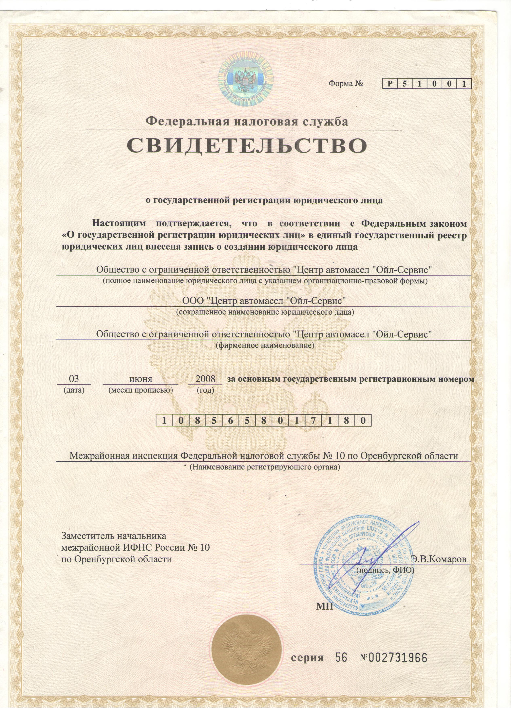

Юридический / почтовый адрес: 460050, Оренбургская обл., г. Оренбург, ул. Терешковой, д. 144/3
Фактический адрес: 460021, Оренбургская обл., г. Оренбург, Знаменский проезд, д. 3
Режим работы: ежедневно с 9:00 до 21:00
Юридический/почтовый адрес: 460050, Оренбургская обл., г. Оренбург, ул. Терешковой, д.144/3
Фактический адрес: 460021, Оренбургская обл., г. Оренбург, Знаменский проезд, д.3
Понедельник — 9:00 - 21:00
Вторник — 9:00 - 21:00
Среда — 9:00 - 21:00
Четверг — 9:00 - 21:00
Пятница — 9:00 - 21:00
Суббота — 9:00 - 21:00
Воскресенье — 9:00 - 21:00
о государственной регистрации юридического лица
Форма № Р 5 1 0 0 1
Настоящим подтверждается, что в соответствии с Федеральным законом «О государственной регистрации юридических лиц» в Единый государственный реестр юридических лиц внесена запись о создании юридического лица:
Дата регистрации: 03 июня 2008 года
ОГРН: 1 0 8 5 6 5 8 0 1 7 1 8 0
Регистрирующий орган: Межрайонная инспекция Федеральной налоговой службы № 10 по Оренбургской области
Подписал: Заместитель начальника межрайонной ИФНС России № 10 по Оренбургской области Э.В. Комаров
Серия: 56 №: 002731966

Свидетельство серия 56 № 002731966
ГЛАВНЫЙ ГОСУДАРСТВЕННЫЙ САНИТАРНЫЙ ВРАЧ РОССИЙСКОЙ ФЕДЕРАЦИИ
ОБ УТВЕРЖДЕНИИ САНИТАРНО-ЭПИДЕМИОЛОГИЧЕСКИХ ПРАВИЛ И НОРМ САНПИН 2.3/2.4.4282-26 «САНИТАРНО-ЭПИДЕМИОЛОГИЧЕСКИЕ ТРЕБОВАНИЯ К ОРГАНИЗАЦИИ ОБЩЕСТВЕННОГО ПИТАНИЯ НАСЕЛЕНИЯ»
В соответствии с пунктом 1 статьи 17 и пунктом 1 статьи 39 Федерального закона от 30.03.1999 N 52-ФЗ «О санитарно-эпидемиологическом благополучии населения» и пунктом 2 Положения о государственном санитарно-эпидемиологическом нормировании, утвержденного постановлением Правительства Российской Федерации от 24.07.2000 N 554, постановляю:
1. Утвердить санитарно-эпидемиологические правила и нормы СанПиН 2.3/2.4.4282-26 «Санитарно-эпидемиологические требования к организации общественного питания населения» согласно приложению к настоящему постановлению.
2. Признать утратившими силу: постановление Главного государственного санитарного врача Российской Федерации от 27.10.2020 N 32 «Об утверждении санитарно-эпидемиологических правил и норм СанПиН 2.3/2.4.3590-20 «Санитарно-эпидемиологические требования к организации общественного питания населения»; постановление Главного государственного санитарного врача Российской Федерации от 22.08.2024 N 9 «О внесении изменений в санитарно-эпидемиологические правила и нормы СанПиН 2.3/2.4.3590-20».
3. Настоящее постановление вступает в силу с 01.09.2026 и действует до 01.09.2032.
А.Ю.ПОПОВА
«САНИТАРНО-ЭПИДЕМИОЛОГИЧЕСКИЕ ТРЕБОВАНИЯ К ОРГАНИЗАЦИИ ОБЩЕСТВЕННОГО ПИТАНИЯ НАСЕЛЕНИЯ»
1. Настоящие санитарно-эпидемиологические правила и нормативы (далее — Правила) устанавливают санитарно-эпидемиологические требования к обеспечению безопасности и (или) безвредности для человека биологических, химических, физических и иных факторов среды обитания и условий деятельности при оказании услуг общественного питания населению, несоблюдение которых создает угрозу жизни или здоровью человека, угрозу возникновения и распространения инфекционных и неинфекционных заболеваний.
2. Правила распространяются на юридических лиц и граждан, в том числе индивидуальных предпринимателей, осуществляющих деятельность по оказанию услуг общественного питания населению (далее — предприятия общественного питания).
3. Оценка соблюдения рекомендательных норм, содержащихся в Правилах, не может являться предметом федерального государственного санитарно-эпидемиологического контроля (надзора).
4. Предприятия общественного питания должны проводить производственный контроль, основанный на принципах ХАССП (Hazard Analysis and Critical Control Points), в соответствии с порядком и периодичностью, установленными предприятием общественного питания.
5. Прием пищевой продукции, в том числе продовольственного сырья, на предприятие общественного питания должен осуществляться при наличии маркировки и товаросопроводительной документации, сведений об оценке (подтверждении) соответствия, предусмотренных техническими регламентами.
6. Готовые блюда, напитки, кулинарные и кондитерские изделия, изготавливаемые в предприятиях общественного питания, должны соответствовать требованиям технических регламентов и единым санитарным требованиям. Пищевая продукция предприятий общественного питания, срок годности которой истек, подлежит утилизации.
7. Реализация пищевой продукции предприятий общественного питания вне предприятия общественного питания без оказания услуг общественного питания должна осуществляться при наличии документов, подтверждающих их соответствие обязательным требованиям.
8. Планировка производственных помещений предприятий общественного питания, их конструкция, размещение и размер должны обеспечиваться в соответствии с требованиями технического регламента. В предприятиях общественного питания должна обеспечиваться последовательность (поточность) технологических процессов, исключающих встречные потоки сырья, сырых полуфабрикатов и готовой продукции, использованной и продезинфицированной посуды, а также встречного движения посетителей и персонала.
9. Допускается на месте обслуживания изготавливать блюдо или кулинарное изделие из полуфабрикатов при наличии оборудования, позволяющего осуществлять их доготовку. При этом должны соблюдаться условия хранения и сроки годности используемых полуфабрикатов.
10. При изготовлении блюд, кулинарных и кондитерских изделий необходимо обеспечивать последовательность и поточность технологических процессов, обеспечивающих химическую, биологическую и физическую безопасность.
11. Изготовление продукции должно производиться по технологическим документам, в том числе технологической карте, технико-технологической карте, технологической инструкции, разработанным и утвержденным руководителем организации или уполномоченным им лицом.
12. Предприятия общественного питания для приготовления пищи должны быть оснащены техническими средствами для реализации технологического процесса, холодильным, моечным оборудованием, инвентарем, посудой, тарой, изготовленными из материалов, соответствующих требованиям, предъявляемым к материалам, контактирующим с пищевой продукцией.
13. Холодная и горячая вода, используемая для производственных целей, мытья посуды и оборудования, соблюдения правил личной гигиены, должна отвечать требованиям, предъявляемым к питьевой воде.
14. При размещении предприятий общественного питания в жилых зданиях должны соблюдаться санитарно-эпидемиологические требования к условиям проживания в жилых зданиях и помещениях.
15. Система приточно-вытяжной вентиляции производственных помещений должна быть оборудована отдельно от систем вентиляции помещений, не связанных с организацией питания, включая санитарно-бытовые помещения.
16. Воздух и параметры микроклимата рабочей зоны должны соответствовать гигиеническим нормативам. Зоны (участки) и (или) размещенное в них оборудование, являющееся источниками выделения газов, пыли (мучной), влаги, тепла, должны быть оборудованы локальными вытяжными системами.
17. В помещениях отделки кондитерских изделий приточная система вентиляции должна быть обеспечена противопыльными и бактерицидными фильтрами. Для обеззараживания воздуха в помещениях, задействованных в приготовлении холодных блюд, мягкого мороженого, кондитерских цехах по приготовлению крема и отделки тортов и пирожных, должно использоваться бактерицидное оборудование в соответствии с инструкцией по эксплуатации.
18. Предприятия общественного питания должны быть оборудованы исправными системами холодного и горячего водоснабжения, водоотведения, теплоснабжения, вентиляции и освещения, которые должны быть выполнены так, чтобы исключить риск загрязнения пищевой продукции. Допускается использование автономных систем и оборудования для обеспечения горячего водоснабжения и теплоснабжения.
19. Внутренняя отделка производственных и санитарно-бытовых помещений предприятий общественного питания должна быть выполнена из материалов, позволяющих проводить ежедневную влажную уборку, обработку моющими и дезинфицирующими средствами, и не иметь повреждений.
20. Сбор и обращение отходов должны соответствовать требованиям по обращению с твердыми коммунальными отходами и содержанию территории.
21. Все помещения, предназначенные для организации общественного питания, должны подвергаться уборке. В производственных помещениях ежедневно проводится влажная уборка с применением моющих и дезинфицирующих средств. Столы для посетителей должны подвергаться уборке после каждого использования.
22. Для уборки производственных и санитарно-бытовых помещений должен выделяться отдельный промаркированный инвентарь, хранение которого должно осуществляться в специально отведенных местах. Уборочный инвентарь для туалета должен храниться отдельно от инвентаря для уборки других помещений.
23. Запрещается ремонт производственных помещений одновременно с изготовлением продукции общественного питания в них.
24. Лица, поступающие на работу в организации общественного питания, должны соответствовать требованиям, касающимся прохождения ими профессиональной гигиенической подготовки и аттестации, предварительных и периодических медицинских осмотров, вакцинации, установленным законодательством Российской Федерации.
25. Медицинский персонал (при наличии) или назначенное ответственное лицо предприятия общественного питания должен проводить ежедневный осмотр работников, занятых изготовлением продукции общественного питания, на наличие гнойничковых заболеваний кожи рук и открытых поверхностей тела, признаков инфекционных заболеваний. Результаты осмотра должны заноситься в гигиенический журнал на бумажном и (или) электронном носителях.
26. В помещениях предприятия общественного питания не должно быть насекомых и грызунов, а также не должны содержаться синантропные птицы и животные. В предприятиях общественного питания запрещается проживание физических лиц, в производственных помещениях не допускается хранение личных вещей и комнатных растений.
27. Мастер-классы (обучающие мероприятия) с участием детей и взрослого населения должны проводиться при создании условий, обеспечивающих безопасность пищевой продукции, и под контролем соблюдения технологии приготовления блюд.
28. Перевозка (транспортирование), в том числе при доставке потребителям, и хранение продовольственного (пищевого) сырья и пищевой продукции должны осуществляться в соответствии с требованиями соответствующих технических регламентов. Совместная перевозка продовольственного сырья, полуфабрикатов и готовой пищевой продукции допускается при условии наличия герметической упаковки, а также при соблюдении температурно-влажностных условий хранения и перевозки.
29. Для продовольственного (пищевого) сырья и готовой к употреблению пищевой продукции должны использоваться раздельное технологическое и холодильное оборудование, производственные столы, разделочный инвентарь (маркированный любым способом), многооборотные средства упаковки и кухонная посуда. Для предприятий общественного питания, имеющих менее 25 посадочных мест, допускается хранение в одном холодильнике пищевого сырья и готовой к употреблению пищевой продукции при условии их нахождения в закрытых контейнерах и гастроемкостях.
30. Допускается обработка продовольственного (пищевого) сырья и изготовление из него кулинарных полуфабрикатов в одном цехе при условии выделения раздельных зон (участков) и обеспечения раздельным оборудованием и инвентарем.
31. Для исключения риска микробиологического и паразитарного загрязнения пищевой продукции работники производственных помещений предприятий общественного питания обязаны: оставлять в индивидуальных шкафах или специально отведенных местах одежду второго и третьего слоя, обувь, головной убор, а также иные личные вещи и хранить отдельно от рабочей одежды и обуви; снимать в специально отведенном месте рабочую одежду, фартук, головной убор при посещении туалета либо надевать сверху халаты; тщательно мыть руки с мылом или иным моющим средством для рук после посещения туалета; сообщать обо всех случаях заболеваний кишечными инфекциями у членов семьи, проживающих совместно, медицинскому работнику или ответственному лицу предприятия общественного питания; использовать одноразовые перчатки при порционировании блюд, приготовлении холодных закусок, салатов, подлежащие замене на новые при нарушении их целостности и после санитарно-гигиенических перерывов в работе.
32. Для предотвращения размножения патогенных микроорганизмов не допускается: нахождение на раздаче более 3 часов с момента изготовления готовых блюд, требующих разогревания перед употреблением; размещение на раздаче для реализации холодных блюд, кондитерских изделий и напитков вне охлаждаемой витрины (холодильного оборудования) и реализация с нарушением установленных сроков годности и условий хранения; заправка соусами (за исключением растительных масел) холодных закусок, предназначенных для реализации вне предприятия общественного питания (за исключением холодных закусок, в которых соус является неотъемлемым компонентом). Соусы к блюдам доставляются в индивидуальной потребительской упаковке; реализация на следующий день готовых блюд; замораживание нереализованных готовых блюд для последующей реализации в другие дни; привлечение к приготовлению, порционированию и раздаче кулинарных изделий посторонних лиц, включая персонал, в должностные обязанности которого не входят указанные виды деятельности.
33. Для исключения перекрестного микробиологического и паразитарного загрязнения: при реализации населению продукции общественного питания через магазин (отдел) предприятия общественного питания создаются условия для раздельного хранения и отпуска полуфабрикатов и готовых к употреблению кулинарных и кондитерских изделий; при перевозке (транспортировании) и хранении пищевая продукция общественного питания в виде полуфабрикатов, охлажденных, замороженных и горячих блюд, кулинарных изделий, реализуемая вне предприятия общественного питания по заказам потребителей, а также в организациях торговли и отделах кулинарии, упаковывается в упаковку, в соответствии с маркировкой по их применению для контакта с пищевой продукцией.
34. В целях исключения контактного микробиологического и паразитарного загрязнения пищевой продукции для посетителей и работников предприятий общественного питания должны быть оборудованы отдельные туалеты с раковинами для мытья рук. Для предприятий общественного питания, имеющих менее 25 посадочных мест, допускается наличие одного туалета для посетителей и персонала с входом, изолированным от производственных и складских помещений.
35. В целях контроля за риском возникновения условий для размножения патогенных микроорганизмов необходимо вести ежедневную регистрацию показателей температурного режима хранения пищевой продукции в холодильном оборудовании и складских помещениях на бумажном и (или) электронном носителях и влажности — в складских помещениях.
36. Приготовление блюд на мангалах, жаровнях, решетках, котлах на улицах допускается при соблюдении следующего: полуфабрикаты должны изготавливаться в стационарных предприятиях общественного питания; имеется павильон (палатка, тент и прочее), подключенный к сетям водопровода и канализации, а также холодильное оборудование для хранения полуфабрикатов; имеются одноразовая посуда и столовые приборы; жарка осуществляется непосредственно перед реализацией; имеются условия для соблюдения работниками правил личной гигиены; мойка использованного инвентаря и тары осуществляется в стационарном предприятии общественного питания.
37. Столовые приборы, столовая посуда, чайная посуда, подносы перед раздачей должны быть вымыты и высушены. В конце рабочего дня должна проводиться мойка всей посуды, столовых приборов, подносов в посудомоечных машинах с использованием режимов обработки, обеспечивающих дезинфекцию посуды и столовых приборов, и максимальных температурных режимов. При отсутствии посудомоечной машины мытье посуды должно осуществляться ручным способом с обработкой всей посуды и столовых приборов дезинфицирующими средствами в соответствии с инструкциями по их применению.
38. Аппараты для автоматической выдачи пищевой продукции и аппараты по приготовлению напитков должны обрабатываться в соответствии с инструкцией изготовителя с применением моющих и дезинфицирующих средств.
39. Водозаправочные емкости вагонов-ресторанов и купе-буфетов должны промываться и дезинфицироваться в соответствии с технологическими графиками мойки и дезинфекции.
40. Складские помещения для хранения продукции должны быть оборудованы приборами для измерения относительной влажности и температуры воздуха, холодильное оборудование — контрольными термометрами.
41. Лица, сопровождающие продовольственное сырье и пищевую продукцию в пути следования и выполняющие их погрузку и выгрузку, должны использовать рабочую одежду с учетом ее смены по мере загрязнения.
42. При использовании пищевых добавок должен проводиться контроль их дозирования в соответствии с рецептурами и установленными нормами, соблюдения требований к их хранению. Информация о наличии пищевых добавок должна доводиться до сведений потребителей.
43. При использовании ингредиентов, обладающих аллергенными свойствами, необходимо доводить до потребителя сведения об их наличии в готовой продукции в соответствии с законодательством Российской Федерации.
44. Фритюрные жиры, используемые при производстве (изготовлении) пищевой продукции во фритюре, подлежат ежедневному контролю. Информация о замене фритюрных жиров должна фиксироваться ответственным должностным лицом в электронном или бумажном виде и храниться не менее трех месяцев.
45. С целью исключения опасности загрязнения пищевой продукции токсичными химическими веществами не допускается хранение и изготовление продукции во время проведения мероприятий по дератизации и дезинсекции в производственных помещениях предприятия общественного питания.
46. В целях исключения риска токсического воздействия на здоровье потребителя и персонала предприятий общественного питания, в том числе аллергических реакций, моющие и дезинфицирующие средства, предназначенные для уборки помещений, производственного и санитарного оборудования, должны использоваться в соответствии с инструкциями по их применению и храниться в специально отведенных местах. Исключается их попадание в пищевую продукцию.
47. Емкости с рабочими растворами дезинфицирующих, моющих средств должны быть промаркированы с указанием названия средства, его концентрации, даты приготовления, предельного срока годности.
48. Использование ртутных термометров при организации общественного питания не допускается.
49. При организации общественного питания детей в организациях, осуществляющих образовательную деятельность, оказание услуг по воспитанию и обучению, уходу и присмотру за детьми, отдыху и оздоровлению, предоставлению мест временного проживания, социальных, медицинских услуг, для контроля температуры блюд на линии раздачи должны использоваться термометры.
50. Температура горячих жидких блюд и иных горячих блюд, холодных супов, напитков, реализуемых потребителю через раздачу, должна соответствовать технологическим документам.
51. Количество комплектуемых столовой посуды и столовых приборов должно соответствовать количеству порций для однократного применения, необходимо обеспечить запас фужеров, стаканов и чашек.
52. Предприятия общественного питания должны разрабатывать, документально оформлять и соблюдать внутренний порядок по организации кейтеринга, обеспечивающий прослеживаемость процесса оказания услуг и разграничение ответственности за нарушение санитарно-эпидемиологических требований на этапах изготовления, перевозки, хранения и реализации пищевой продукции.
53. Вскрытие потребительских упаковок с пищевой продукцией, напитками, блюдами, а также порционирование блюд, подготовка кулинарных изделий к раздаче должно производиться в отдельном выделенном помещении и (или) выделенной зоне, расположенных непосредственно в месте проведения мероприятия.
54. Комплектование контейнеров и тележек пищевой продукцией должно начинаться не ранее чем за 3 часа до начала мероприятия в зависимости от условий хранения и сроков годности такой продукции, определенной производителем.
55. Доставка пищевой продукции предприятиями общественного питания для кейтерингового обслуживания должна производиться в изотермических емкостях с прикрепленным или наклеенным маркировочным ярлыком. На ярлыке должны быть указаны: название, адрес предприятия общественного питания; дата и час изготовления пищевой продукции, время окончания раздачи; наименование пищевой продукции; фамилия, имя и отчество (при наличии) ответственного лица. Ярлыки должны сохраняться до конца обслуживания мероприятия. Срок хранения горячих блюд в изотермических емкостях не должен превышать 3 часа (включая время их перевозки).
56. При организации питания пациентов в медицинских организациях и организациях социального обслуживания, осуществляющих обслуживание в стационарных условиях, должны соблюдаться следующие требования: предприятие общественного питания медицинской организации должно размещаться в отдельно стоящем здании; при организации питания пациентов должны учитываться принципы лечебного питания; выдача готовой пищевой продукции должна осуществляться только после снятия пробы ответственным лицом или комиссией; в целях контроля за качеством и безопасностью приготовленной пищевой продукции должна отбираться суточная проба от каждой партии приготовленной пищевой продукции.
57. При организации питания авиапассажиров и членов экипажей воздушных судов гражданской авиации должны соблюдаться следующие санитарно-эпидемиологические требования: должно использоваться съемное буфетно-кухонное оборудование, конструкция которого обеспечивает возможность его очистки, мойки и дезинфекции; не допускается к реализации пищевая продукция домашнего (непромышленного изготовления); буфетно-кухонное оборудование, в том числе съемное, должно плотно закрываться и иметь исправные запоры для предупреждения загрязнения пищевой продукции.
58. При организации лечебно-профилактического питания должны соблюдаться санитарно-эпидемиологические требования, установленные в Правилах.
59. При формировании рациона здорового питания и меню при организации общественного питания детей в организованных детских коллективах должны соблюдаться следующие требования: питание детей первого года жизни должно назначаться индивидуально в соответствии с возрастными физиологическими потребностями; в организованных детских коллективах общественное питание детей должно осуществляться посредством реализации основного (организованного) меню, включающего горячее питание, дополнительного питания, а также индивидуальных меню для детей, нуждающихся в лечебном и диетическом питании. Для предотвращения размножения микроорганизмов готовые блюда должны быть реализованы не позднее 2 часов с момента изготовления; меню должно предусматривать распределение блюд по отдельным приемам пищи (завтрак, второй завтрак, обед, полдник, ужин, второй ужин); меню должно разрабатываться на период не менее двух недель; в целях контроля за качеством и безопасностью приготовленной пищевой продукции на пищеблоках должна отбираться суточная проба от каждой партии приготовленной пищевой продукции.
60. При организации общественного питания детей, нуждающихся в лечебном и диетическом питании в организованных детских коллективах, должны соблюдаться следующие требования: для детей, нуждающихся в лечебном и диетическом питании, должно быть организовано лечебное и диетическое питание в соответствии с представленными родителями (законными представителями ребенка) назначениями лечащего врача.
61. При организации дополнительного питания детей в детских организациях должны соблюдаться следующие требования: ассортимент дополнительного питания (буфетной продукции) должен приниматься с учетом ограничений, изложенных в приложении N 6 к Правилам. Соки, напитки, питьевая вода должны реализоваться в потребительской упаковке промышленного изготовления.
62. Питьевой режим в детских, медицинских организациях и организациях социального обслуживания, а также при проведении массовых мероприятий с участием детей должен соблюдаться с соблюдением следующих требований: должно осуществляться обеспечение питьевой водой, отвечающей обязательным требованиям; питьевой режим должен быть организован посредством установки стационарных питьевых фонтанчиков, устройств для выдачи воды, выдачи упакованной питьевой воды или с использованием кипяченой питьевой воды.
63. При организации питания детей, находящихся в медицинских организациях, оказывающих медицинскую помощь в стационарных условиях, должны соблюдаться следующие требования: питание детей должно быть организовано посредством применения системы стандартных диет с учетом основного заболевания в соответствии с установленными Минздравом России требованиями.
64. При организации питания детей в группах семейного типа и группах по присмотру и уходу за детьми при организациях, осуществляющих образовательную деятельность по образовательным программам дошкольного образования, а также детей-сирот, должны соблюдаться следующие требования: допускается осуществлять питание детей в одном помещении (кухне), предназначенном как для приготовления пищи, так и для ее приема; при организации приемов пищи непосредственно на кухне должна быть выделена специальная зона.
65. При организации питания в детских лагерях палаточного типа, при проведении детских туристических походов и иных массовых мероприятий в природных условиях должны соблюдаться следующие требования: должны быть выделены зоны для хранения пищевой продукции, приготовления и приема пищи, сбора и хранения отходов, соблюдения правил личной гигиены; независимо от формы питания на территории детского лагеря палаточного типа должна выделяться кухонная зона. Кухонная зона должна включать место для хранения, приготовления пищи, костровое место или полевую кухню, место для приема пищи, место для мытья рук.
ОБ УТВЕРЖДЕНИИ ПРАВИЛ ПРОДАЖИ ТОВАРОВ ПО ДОГОВОРУ РОЗНИЧНОЙ КУПЛИ-ПРОДАЖИ, ПЕРЕЧНЯ ТОВАРОВ ДЛИТЕЛЬНОГО ПОЛЬЗОВАНИЯ, НА КОТОРЫЕ НЕ РАСПРОСТРАНЯЕТСЯ ТРЕБОВАНИЕ ПОТРЕБИТЕЛЯ О БЕЗВОЗМЕЗДНОМ ПРЕДОСТАВЛЕНИИ ЕМУ ТОВАРА, ОБЛАДАЮЩЕГО ЭТИМИ ЖЕ ОСНОВНЫМИ ПОТРЕБИТЕЛЬСКИМИ СВОЙСТВАМИ, НА ПЕРИОД РЕМОНТА ИЛИ ЗАМЕНЫ ТАКОГО ТОВАРА, И ПЕРЕЧНЯ НЕПРОДОВОЛЬСТВЕННЫХ ТОВАРОВ НАДЛЕЖАЩЕГО КАЧЕСТВА, НЕ ПОДЛЕЖАЩИХ ОБМЕНУ
Список изменяющих документов (с изм., внесенными Постановлением Правительства РФ от 29.08.2026 N 1112)
В соответствии со статьями 1, 20 и 25 Закона Российской Федерации «О защите прав потребителей» Правительство Российской Федерации постановляет:
1. Утвердить прилагаемые: Правила продажи товаров по договору розничной купли-продажи; перечень товаров длительного пользования, на которые не распространяется требование потребителя о безвозмездном предоставлении ему товара, обладающего этими же основными потребительскими свойствами, на период ремонта или замены такого товара; перечень непродовольственных товаров надлежащего качества, не подлежащих обмену.
2. Признать утратившими силу: абзацы второй — четвертый пункта 1, пункт 2 (в части, касающейся абзацев второго — четвертого пункта 1) постановления Правительства Российской Федерации от 31 декабря 2020 г. N 2463; абзац четвертый пункта 1 постановления Правительства Российской Федерации от 17 мая 2024 г. N 616; постановление Правительства Российской Федерации от 17 февраля 2026 г. N 148.
3. Настоящее постановление вступает в силу с 1 сентября 2026 г. и действует до 1 сентября 2032 г.
Председатель Правительства Российской Федерации М.МИШУСТИН
1. Настоящие Правила регулируют отношения между продавцами и потребителями при продаже товаров по договору розничной купли-продажи, в том числе отношения между продавцами и потребителями при продаже товаров дистанционным способом, а также отношения между владельцами агрегаторов информации о товарах (услугах) и потребителями. Понятия «потребитель», «продавец», «владелец агрегатора информации о товарах (услугах)» (далее — владелец агрегатора) применяются в настоящих Правилах в значениях, установленных Законом Российской Федерации «О защите прав потребителей».
2. На торговых объектах (за исключением мест, которые определяются продавцом и не предназначены для свободного доступа потребителей) не допускается ограничение прав потребителей на поиск и получение любой информации в любых формах из любых источников, в том числе путем фотографирования товара, если такие действия не нарушают требований законодательства Российской Федерации и международных договоров Российской Федерации. При продаже товаров потребителю предоставляется возможность самостоятельно или с помощью продавца ознакомиться с необходимыми товарами.
3. Продавец обязан обеспечить наличие ценников на реализуемые товары с указанием наименования товара, цены за единицу товара или за единицу измерения товара (вес (масса нетто), длина и др.).
4. При продаже продавцом товара, который может быть измерен, продавец обязан применять средства измерений, находящиеся в исправном состоянии и соответствующие требованиям законодательства Российской Федерации об обеспечении единства измерений. В случае продажи продавцом товара, цена которого определяется на основании установленной продавцом цены за единицу измерения товара (вес (масса нетто), длина и др.), для проверки потребителем правильности цены и измерения приобретенного товара в месте продажи на доступном месте должны быть установлены средства измерений, находящиеся в исправном состоянии и соответствующие требованиям законодательства Российской Федерации об обеспечении единства измерений.
5. В случае поступления претензии потребителя продавец направляет ему ответ в письменной (электронной) форме в отношении заявленных требований по адресу электронной почты или почтовому адресу, указанным потребителем в претензии, и в сроки, установленные Законом Российской Федерации «О защите прав потребителей» для удовлетворения соответствующих требований потребителя.
6. В случаях если настоящими Правилами предусмотрена обязанность продавца (владельца агрегатора) по предоставлению потребителю кассового или товарного чека, такая обязанность признается исполненной также при направлении потребителю кассового или товарного чека с помощью электронных и иных технических средств, если иное не предусмотрено федеральными законами.
7. При осуществлении розничной торговли в месте нахождения потребителя вне торговых объектов путем непосредственного ознакомления потребителя с товаром (на дому, по месту работы или учебы, на транспорте, на улице и в иных местах) продажа продовольственных товаров без потребительской упаковки, а также лекарственных препаратов, медицинских изделий, ювелирных и других изделий из драгоценных металлов и (или) драгоценных камней не допускается.
8. Продажа товаров, подлежащих федеральному государственному ветеринарному контролю (надзору), осуществляется при наличии ветеринарного сопроводительного документа, оформленного в соответствии со статьей 2.3 Закона Российской Федерации «О ветеринарии».
9. Продажа товаров осуществляется с применением контрольно-кассовой техники в соответствии с Федеральным законом «О применении контрольно-кассовой техники при осуществлении расчетов в Российской Федерации».
10. Введение ограничений и запретов на продажу товаров допускается только в случаях, предусмотренных федеральными законами.
11. При продаже товаров продавец и (или) уполномоченное им лицо обязаны проверить сведения, позволяющие удостоверить личность и (или) установить возраст потребителя, если такое требование необходимо в соответствии с законодательством Российской Федерации.
12. В случае если при продаже товаров продавцом реализуется программа с использованием дисконтных (накопительных) карт, направленная на увеличение активности потребителей в приобретении товаров и предусматривающая в том числе начисление бонусов (баллов, иных единиц, характеризующих активность клиента в приобретении товаров) по основаниям, установленным в указанной программе, продавец обеспечивает возможность использования потребителем многофункционального сервиса обмена информацией.
13. При продаже товаров продавец вправе использовать государственную информационную систему «Единая система идентификации и аутентификации физических лиц с использованием биометрических персональных данных» для идентификации и (или) аутентификации покупателя при необходимости удостоверить его личность и (или) подтвердить его возраст, право на льготы.
14. Настоящие Правила в наглядной и доступной форме доводятся продавцом до сведения потребителя по его требованию.
15. При продаже товара дистанционным способом продавец обязан заключить договор розничной купли-продажи с любым лицом, выразившим намерение приобрести товар на условиях оферты.
16. Обязательства продавца по передаче товара и иные обязательства, связанные с передачей товара, возникают с момента получения продавцом сообщения потребителя о намерении заключить договор розничной купли-продажи, если оферта продавца не содержит иного условия о моменте возникновения у продавца обязательства по передаче товара потребителю. Договор розничной купли-продажи считается заключенным с момента выдачи продавцом потребителю кассового или товарного чека либо иного документа, подтверждающего оплату товара, или с момента получения продавцом сообщения потребителя о намерении заключить договор розничной купли-продажи.
17. При продаже товара дистанционным способом с использованием информационно-телекоммуникационной сети «Интернет» и (или) программы для электронных вычислительных машин продавец (владелец агрегатора) предоставляет потребителю подтверждение заключения договора розничной купли-продажи на условиях оферты, которая содержит существенные условия этого договора после получения продавцом сообщения потребителя о намерении заключить договор розничной купли-продажи. Указанное подтверждение должно содержать номер заказа или иной способ идентификации заказа.
18. Продавец или уполномоченное им лицо вправе ознакомить потребителя, заключившего договор розничной купли-продажи дистанционным способом, с приобретаемым товаром до его передачи потребителю.
19. Товар признается товаром, не предназначенным для продажи дистанционным способом, в случае если продажа товара на сайте и (или) странице сайта в сети «Интернет» и (или) в программе для электронных вычислительных машин подразумевает предварительное согласование условий договора розничной купли-продажи.
20. При продаже товара дистанционным способом с использованием сети «Интернет» продавец обязан обеспечить возможность ознакомления потребителя с офертой путем ее размещения на сайте и (или) странице сайта в сети «Интернет» и (или) в программе для электронных вычислительных машин.
21. При продаже товара дистанционным способом продавец (владелец агрегатора) предоставляет потребителю полную и достоверную информацию, характеризующую предлагаемый товар.
22. Юридическое лицо, зарегистрированное на территории Российской Федерации и осуществляющее продажу товаров дистанционным способом на территории Российской Федерации, обязано указывать полное фирменное наименование (наименование), основной государственный регистрационный номер, адрес и место нахождения, адрес электронной почты и (или) номер телефона.
23. Доставленный товар передается потребителю по указанному им адресу, а при отсутствии потребителя — любому лицу, предъявившему информацию о номере заказа либо иное (в том числе электронное) подтверждение заключения договора розничной купли-продажи или оформление заказа.
24. Продавец доводит до сведения потребителя информацию о форме направления претензий, способах направления претензий.
25. При продаже товара дистанционным способом обязанность продавца по возврату денежной суммы, уплаченной потребителем по договору розничной купли-продажи, возникает в соответствии с пунктом 4 статьи 26.1 Закона Российской Федерации «О защите прав потребителей».
26. Расходы на осуществление возврата суммы, уплаченной потребителем в соответствии с договором розничной купли-продажи за товар ненадлежащего качества, несет продавец. В других случаях распределение указанных расходов определяется офертой.
27. Оплата товара потребителем путем перевода средств на счет третьего лица, указанного продавцом, не освобождает продавца от обязанности осуществить возврат уплаченной потребителем суммы при возврате потребителем товара как надлежащего, так и ненадлежащего качества.
28. Идентификация потребителя в целях заключения и (или) исполнения договора розничной купли-продажи с использованием сети «Интернет» может осуществляться в том числе с помощью федеральной государственной информационной системы «Единая система идентификации и аутентификации».
29. Продажа лекарственных препаратов для медицинского применения дистанционным способом осуществляется в соответствии с Правилами выдачи разрешения на осуществление розничной торговли лекарственными препаратами для медицинского применения дистанционным способом, утвержденными постановлением Правительства Российской Федерации от 16 мая 2020 г. N 697.
30. Требования, установленные абзацем вторым пункта 2, абзацем вторым пункта 4, пунктами 12, 40, абзацем вторым пункта 51, пунктами 59, 67 и 70 настоящих Правил, к отношениям продавца и потребителя при продаже товаров дистанционным способом не применяются.
31. При продаже товаров с использованием автоматов не допускается продажа товаров, свободный оборот которых запрещен или ограничен, а также товаров, к которым есть специальные требования, исключающие возможность их продажи с использованием автоматов.
32. При продаже товаров с использованием автоматов продавец обязан обеспечить целостность товаров (при продаже товара в потребительской упаковке), сохранность их потребительских свойств для использования товаров по назначению, а также довести до сведения потребителя следующую информацию: наименование продавца, его ОГРН, место нахождения, режим работы, номер телефона и адрес электронной почты; правила пользования автоматом; порядок возврата суммы, уплаченной за товар, если товар не предоставлен потребителю.
33. Не подлежат продаже бывшие в употреблении медицинские изделия, лекарственные препараты, предметы личной гигиены, парфюмерно-косметические товары, товары бытовой химии, изделия швейные и трикотажные бельевые, чулочно-носочные изделия, а также посуда разового использования.
34. При передаче технически сложных товаров бытового назначения, бывших в употреблении, потребителю одновременно передаются (при наличии у продавца) соответствующие технические и (или) эксплуатационные документы, а также гарантийный талон на товар.
35. Комиссионная торговля товарами, которые изъяты из оборота, розничная продажа которых запрещена или ограничена, драгоценными металлами и драгоценными камнями, товарами для профилактики и лечения заболеваний в домашних условиях, предметами личной гигиены, изделиями швейными и трикотажными бельевыми, изделиями чулочно-носочными, изделиями и материалами, контактирующими с пищевыми продуктами, из полимерных материалов, в том числе для разового использования, товарами бытовой химии и лекарственными препаратами не допускается.
36. При продаже непродовольственных товаров, принятых на комиссию, продавец обеспечивает наличие на товаре ярлыка, содержащего: сведения, характеризующие состояние товара (новый, бывший в употреблении, недостатки товара); сведения о подтверждении соответствия товара установленным требованиям, а также о сроке годности и (или) сроке службы.
37. При передаче товара потребителю одновременно передаются установленные изготовителем комплект принадлежностей (при наличии) и документы, содержащие информацию о правилах и условиях безопасного использования товара (при наличии).
38. В случае осуществления продавцом предпродажного фасования и упаковки продовольственных товаров, цена которых определяется на основании установленной продавцом цены за вес (массу нетто) товара, на расфасованном товаре указывается его наименование, вес (масса нетто), цена за единицу измерения товара или вес (масса нетто) товара, цена отвеса, дата фасования и срок годности.
39. Продовольственные товары, цена которых определяется на основании установленной продавцом цены за вес (массу нетто) товара, передаются потребителю в потребительской упаковке (за исключением товаров, реализуемых методом самообслуживания или в тару потребителя) без взимания за потребительскую упаковку дополнительной платы.
40. В месте продажи размещение (выкладка) молочных, молочных составных и молокосодержащих продуктов должно осуществляться способом, позволяющим визуально отделить указанные продукты от иных пищевых продуктов, и сопровождаться информационной надписью «Продукты без заменителя молочного жира».
41. Образцы технически сложных товаров бытового назначения, предлагаемых для продажи, должны быть размещены в торговом помещении и сопровождаться краткими аннотациями, содержащими основные технические характеристики.
42. Лицо, осуществляющее продажу технически сложных товаров бытового назначения, по требованию потребителя в его присутствии проверяет комплектность товара, наличие относящихся к нему технических и (или) эксплуатационных документов, правильность цены.
43. Продавец или иное лицо, выполняющее функции продавца по договору с ним, обязаны осуществить сборку и (или) установку (подключение) на дому у потребителя технически сложного товара бытового назначения, самостоятельная сборка и (или) подключение которого потребителем в соответствии с обязательными требованиями, изложенными в технических и (или) эксплуатационных документах, прилагаемых к товару, не допускается.
44. При дистанционном способе продажи товара возврат технически сложного товара бытового назначения надлежащего качества возможен в случае, если сохранены его потребительские свойства и товарный вид, включая потребительскую упаковку товара, комплектность и относящиеся к нему технические и (или) эксплуатационные документы, документ, подтверждающий факт и условия покупки указанного товара.
45. Автомобили, самоходные машины, мотоциклы и другие виды мототехники, прицепы и номерные агрегаты к ним должны пройти предпродажную подготовку, виды и объемы которой определяются изготовителем. В сервисной книжке на товар или ином заменяющем ее документе продавец обязан сделать отметку о проведении такой подготовки.
46. При передаче товара потребителю одновременно передаются установленные изготовителем комплект принадлежностей и документы с информацией о правилах и условиях эффективного и безопасного использования товара и поддержания его в пригодном к эксплуатации состоянии.
47. Лицо, осуществляющее продажу товара, при его передаче проверяет в присутствии потребителя качество выполненных работ по предпродажной подготовке товара, а также его комплектность.
48. При продаже товара дистанционным способом возврат транспортного средства надлежащего качества возможен в случае, если сохранены его потребительские свойства и товарный вид, комплектность и относящиеся к нему технические и (или) эксплуатационные документы, документ, подтверждающий факт и условия покупки указанного товара у продавца.
49. Продажа ювелирных и других изделий из драгоценных металлов, произведенных в Российской Федерации, подлежащих опробованию, анализу и клеймению, осуществляется только при наличии на этих изделиях оттисков государственных пробирных клейм, двухмерных штриховых кодов, содержащих уникальные идентификационные номера ювелирных изделий, а также оттисков именников (для изделий российского производства). Допускается продажа ювелирных и других изделий из серебра российского производства без оттиска государственного пробирного клейма. Продажа ограненных драгоценных камней осуществляется при наличии на каждый такой камень сертификата. Продажа инвестиционных драгоценных металлов осуществляется только при наличии паспорта или сертификата на каждый слиток.
50. Ювелирные и другие изделия из драгоценных металлов и (или) драгоценных камней, выставленные для продажи, должны иметь опломбированные бирки (ярлыки) с указанием наименования изделия и его изготовителя, артикула и (или) модели, общего веса изделия, наименования драгоценного металла и его пробы, наименования, веса, формы огранки и качественно-цветовых характеристик вставок драгоценных камней, а также цены изделия.
51. При передаче приобретенного товара потребителю продавец проверяет наличие уникального идентификационного номера ювелирного изделия на бирке (ярлыке), а также соответствие ювелирного изделия данным, указанным на бирке (ярлыке).
52. Ювелирные и другие изделия из драгоценных металлов и (или) драгоценных камней, а также ограненные драгоценные камни должны иметь потребительскую упаковку.
53. На территории Российской Федерации допускается продажа ювелирных изделий из драгоценных металлов и (или) драгоценных камней, инвестиционных драгоценных металлов, монет из драгоценных металлов, а также сертифицированных ограненных драгоценных камней дистанционным способом.
54. Требования, указанные в абзаце первом пункта 51 настоящих Правил, не распространяются на монеты из золота, выпущенные в обращение до 1 сентября 2025 г.
55. Информация о животных и растениях, предлагаемых к продаже, должна содержать их видовое название, сведения об особенностях содержания и разведения. Продавец также должен представить следующую информацию: номер и дата разрешения на добывание, оборот, содержание и разведение в полувольных условиях и искусственно созданной среде обитания определенных видов диких животных; номер и дата разрешения на ввоз на территорию Российской Федерации определенных видов диких животных и дикорастущих растений; номер и дата свидетельства о внесении зоологической коллекции, частью которой является предлагаемое к продаже дикое животное, в реестр зоологических коллекций; ветеринарный сопроводительный документ, оформленный в соответствии со статьей 2.3 Закона Российской Федерации «О ветеринарии», либо ветеринарный паспорт животного.
56. В случае если кассовый чек на товар, электронный или иной документ, подтверждающий оплату товара, не содержит видовое название и количество животных или растений, вместе с товаром потребителю по его требованию передается товарный чек, в котором указываются эти сведения, наименование продавца, дата продажи и цена, и лицом, непосредственно осуществляющим продажу товара, проставляется подпись.
57. При продаже экземпляров аудиовизуальных произведений, фонограмм, программ для электронных вычислительных машин и баз данных продавец обязан предоставить потребителю следующую информацию о предлагаемом к продаже товаре, наличие которой на каждом экземпляре (потребительской упаковке) является обязательным: технические характеристики носителя; сведения об обладателе авторского права и (или) смежных прав; номер регистрации программы для электронных вычислительных машин или базы данных, если они были зарегистрированы; знак информационной продукции.
58. В отношении экземпляров фильмов продавец обязан предоставить потребителю также следующую информацию: номер и дата прокатного удостоверения; наименование фильма, страны и студии, на которой снят фильм, год его выпуска; основные фильмографические данные (жанр, аннотация, сведения об авторе сценария, режиссере, композиторе, исполнителях главных ролей); продолжительность фильма (в часах и минутах).
59. При передаче оплаченного товара продавец по требованию потребителя предоставляет ему возможность ознакомиться с фрагментами аудиовизуального произведения, фонограммы, демонстрирует работу программы для электронных вычислительных машин и базы данных.
60. Продажа экземпляров аудиовизуальных произведений, фонограмм, программ для электронных вычислительных машин и баз данных осуществляется только в потребительской упаковке.
61. Продажа экземпляров аудиовизуальных произведений, фонограмм, программ для электронных вычислительных машин и баз данных при осуществлении розничной торговли с использованием лотков и палаток не допускается.
62. При продаже круглых лесоматериалов и пиломатериалов продавец обязан на доступном для потребителя месте разместить информацию с указанием коэффициентов перевода круглых лесоматериалов и пиломатериалов в плотную кубомассу, кубатуры пиломатериалов и методики измерений.
63. Вместе с товаром потребителю передается относящаяся к товару документация изготовителя.
64. Продавец должен обеспечить условия для вывоза лесных и строительных материалов транспортом потребителя.
65. Ткани, одежда, меховые товары и обувь передаются потребителю в упакованном виде без взимания за потребительскую упаковку дополнительной платы.
66. В случае если кассовый чек на текстильные, трикотажные, швейные, меховые товары и обувь, электронный или иной документ, подтверждающий оплату таких товаров, не содержит наименование товара, артикул и (или) модель, сорт (при наличии), вместе с товаром потребителю по его требованию передается товарный чек.
67. Непериодические издания, имеющиеся в продаже, размещаются в месте продажи или вносятся в каталоги изданий, имеющихся в наличии. Допускается обозначение цены на каждом выставленном для продажи экземпляре издания.
68. При продаже мебели сборка мебели осуществляется за отдельную плату, если иное не установлено соглашением сторон.
69. В случае если кассовый чек на мебель, электронный или иной документ, подтверждающий оплату такого товара, не содержит наименование товара и продавца, артикул и (или) модель, количество предметов, входящих в набор (гарнитур) мебели, количество необходимой фурнитуры, цену каждого предмета, общую стоимость набора мебели, вид обивочного материала, вместе с товаром потребителю по его требованию передается товарный чек.
70. При продаже парфюмерно-косметических товаров потребителю должна быть предоставлена возможность ознакомиться с запахом духов, одеколона, туалетной воды, а также иной парфюмерной продукции с использованием для этого бумажных листков, лакмусовых бумажек, пропитанных душистой жидкостью, образцов-понюшек, предоставляемых изготовителями товаров, и другими доступными способами.
71. При передаче потребителю товаров бытовой химии в аэрозольной упаковке проверка функционирования упаковки в торговом помещении не производится.
72. Пестициды и агрохимикаты до их размещения в месте продажи должны пройти предпродажную подготовку, которая включает в себя проверку качества потребительской упаковки.
73. Продажа пестицидов и агрохимикатов осуществляется только в потребительской упаковке.
74. При осуществлении розничной торговли на автозаправочных станциях в качестве жидкого моторного топлива допускается продажа только автомобильного бензина и дизельного топлива, которые должны соответствовать требованиям технического регламента Таможенного союза «О требованиях к автомобильному и авиационному бензину, дизельному и судовому топливу, топливу для реактивных двигателей и мазуту» (ТР ТС 013/2011) и отпускаться с применением топливораздаточных колонок, соответствующих обязательным требованиям законодательства Российской Федерации об обеспечении единства измерений.
75. Продажа ввезенных в Российскую Федерацию товаров, изготовленных из объектов животного мира, подпадающих под действие Конвенции о международной торговле видами дикой фауны и флоры, находящимися под угрозой исчезновения, осуществляется на основании разрешения, предусмотренного указанной Конвенцией.
Редакция от 1 сентября 2026
«О защите прав юридических лиц и индивидуальных предпринимателей при осуществлении государственного контроля (надзора) и муниципального контроля»
1. Настоящий Федеральный закон регулирует отношения в области организации и осуществления государственного контроля (надзора), муниципального контроля и защиты прав юридических лиц и индивидуальных предпринимателей при осуществлении государственного контроля (надзора), муниципального контроля.
2. Настоящим Федеральным законом устанавливаются: порядок организации и проведения проверок юридических лиц, индивидуальных предпринимателей органами, уполномоченными на осуществление государственного контроля (надзора), муниципального контроля; порядок взаимодействия органов, уполномоченных на осуществление государственного контроля (надзора), муниципального контроля, при организации и проведении проверок; права и обязанности органов, уполномоченных на осуществление государственного контроля (надзора), муниципального контроля, их должностных лиц при проведении проверок; права и обязанности юридических лиц, индивидуальных предпринимателей при осуществлении государственного контроля (надзора), муниципального контроля, меры по защите их прав и законных интересов.
3. Положения настоящего Федерального закона, устанавливающие порядок организации и проведения проверок, не применяются: при проведении оперативно-розыскных мероприятий, производстве дознания, проведении предварительного следствия; при осуществлении прокурорского надзора, правосудия и проведении административного расследования; при производстве по делам о нарушении антимонопольного законодательства Российской Федерации; при расследовании причин возникновения аварий, несчастных случаев на производстве, инфекционных и массовых неинфекционных заболеваний людей, животных и растений, причинения вреда окружающей среде, имуществу граждан и юридических лиц; при расследовании причин возникновения чрезвычайных ситуаций природного и техногенного характера и ликвидации их последствий; при проведении проверки устранения обстоятельств, послуживших основанием назначения административного наказания в виде административного приостановления деятельности; к мероприятиям по контролю, направленным на противодействие неправомерному использованию инсайдерской информации и манипулированию рынком; к мероприятиям, проводимым должностными лицами пограничных органов во внутренних морских водах, в территориальном море, на континентальном шельфе и в исключительной экономической зоне Российской Федерации; к мероприятиям, проводимым должностными лицами войск национальной гвардии Российской Федерации; при проведении национальной инспекции в Антарктике.
3.1. Положения настоящего Федерального закона не применяются также при осуществлении следующих видов государственного контроля (надзора), муниципального контроля: контроль за осуществлением иностранных инвестиций; государственный контроль за экономической концентрацией; контроль и надзор в финансово-бюджетной сфере; налоговый контроль; валютный контроль; таможенный контроль; государственный портовый контроль; контроль за уплатой страховых взносов; контроль на финансовых рынках; банковский надзор; страховой надзор; надзор в национальной платежной системе; государственный контроль за осуществлением клиринговой деятельности; государственный контроль за осуществлением деятельности по проведению организованных торгов; контроль за соблюдением законодательства о контрактной системе в сфере закупок; контроль за соблюдением требований о противодействии легализации (отмыванию) доходов, полученных преступным путем, и финансированию терроризма; пограничный, санитарно-карантинный, ветеринарный, карантинный фитосанитарный и транспортный контроль в пунктах пропуска через Государственную границу Российской Федерации; контроль за соблюдением требований об антитеррористической защищенности объектов; федеральный государственный контроль за обеспечением безопасности объектов топливно-энергетического комплекса; контроль за деятельностью организаторов распространения информации в сети «Интернет»; контроль за соблюдением требований в связи с распространением информации в сети «Интернет»; государственный контроль и надзор за обработкой персональных данных; государственный контроль при ввозе и вывозе драгоценных металлов и драгоценных камней; государственный контроль в области обеспечения безопасности значимых объектов критической информационной инфраструктуры; федеральный государственный контроль за соблюдением законодательства в области частной охранной деятельности; контроль в части порядка организации и проведения внеплановых проверок за соблюдением аккредитованными удостоверяющими центрами требований Федерального закона «Об электронной подписи»; федеральный государственный надзор в области использования атомной энергии.
4. Особенности организации и проведения проверок в части, касающейся вида, предмета, оснований проведения проверок, сроков и периодичности их проведения, могут устанавливаться другими федеральными законами при осуществлении отдельных видов государственного контроля (надзора).
4.1. Особенности осуществления государственного контроля (надзора) и муниципального контроля на территориях опережающего развития устанавливаются Федеральным законом «О территориях опережающего развития в Российской Федерации».
4.2. Особенности осуществления государственного контроля (надзора) в сфере государственного оборонного заказа устанавливаются Федеральным законом от 29 декабря 2012 года № 275-ФЗ «О государственном оборонном заказе».
5. Если международным договором Российской Федерации установлены иные правила, чем те, которые предусмотрены настоящим Федеральным законом, применяются правила международного договора Российской Федерации.
6. Решения межгосударственных органов, принятые на основании положений международных договоров Российской Федерации в их истолковании, противоречащем Конституции Российской Федерации, не подлежат исполнению в Российской Федерации.
Для целей настоящего Федерального закона используются следующие основные понятия:
Основными принципами защиты прав являются: преимущественно уведомительный порядок начала осуществления отдельных видов предпринимательской деятельности; презумпция добросовестности юридических лиц, индивидуальных предпринимателей; открытость и доступность нормативных правовых актов, соблюдение которых проверяется, а также информации об организации и осуществлении государственного контроля (надзора); проведение проверок в соответствии с полномочиями органа государственного контроля (надзора); недопустимость проводимых в отношении одного лица несколькими органами проверок исполнения одних и тех же обязательных требований; недопустимость требования о получении разрешений, заключений и иных документов для начала предпринимательской деятельности, за исключением случаев, предусмотренных федеральными законами; ответственность органов государственного контроля (надзора) за нарушение законодательства при осуществлении контроля; недопустимость взимания платы за проведение мероприятий по контролю; финансирование за счет средств соответствующих бюджетов проводимых проверок; разграничение полномочий федеральных органов исполнительной власти, органов государственной власти субъектов Российской Федерации.
1. Определение федеральных органов исполнительной власти, уполномоченных на осуществление федерального государственного контроля (надзора), установление их организационной структуры, полномочий, функций осуществляется Президентом Российской Федерации и Правительством Российской Федерации.
2. К полномочиям федеральных органов исполнительной власти относятся: разработка и реализация единой государственной политики в области защиты прав юридических лиц, индивидуальных предпринимателей; организация и осуществление федерального государственного контроля (надзора); разработка административных регламентов; организация и проведение мониторинга эффективности; осуществление других предусмотренных законодательством полномочий.
1. Определение органов исполнительной власти субъектов Российской Федерации, уполномоченных на осуществление регионального государственного контроля (надзора), осуществляется в соответствии с конституцией (уставом) субъекта Российской Федерации.
2. К полномочиям относятся: реализация единой государственной политики в области защиты прав; организация и осуществление регионального государственного контроля (надзора); организация и осуществление федерального государственного контроля (надзора), полномочия по осуществлению которого переданы; разработка административных регламентов; организация и проведение мониторинга эффективности; осуществление иных предусмотренных полномочий.
1. Определение органов местного самоуправления, уполномоченных на осуществление муниципального контроля, осуществляется в соответствии с уставом муниципального образования.
2. К полномочиям относятся: организация и осуществление муниципального контроля; организация и осуществление регионального государственного контроля (надзора), полномочиями по осуществлению которого наделены органы местного самоуправления; разработка административных регламентов; организация и проведение мониторинга эффективности; осуществление иных полномочий.
1. Органы государственного контроля (надзора) при организации и проведении проверок осуществляют взаимодействие по вопросам: информирование о нормативных правовых актах; определение целей, объема, сроков проведения плановых проверок; информирование о результатах проводимых проверок; подготовка предложений о совершенствовании законодательства; принятие административных регламентов взаимодействия; повышение квалификации специалистов.
2. Органы государственного контроля (надзора) привлекают экспертов, экспертные организации к проведению мероприятий по контролю.
3. Плата с юридических лиц, индивидуальных предпринимателей за проведение мероприятий по контролю не взимается.
4. Органы государственного контроля (надзора) взаимодействуют с саморегулируемыми организациями по вопросам защиты прав их членов.
5. Ежегодно органы государственного контроля (надзора) осуществляют подготовку докладов об осуществлении государственного контроля (надзора).
1. Юридические лица, индивидуальные предприниматели обязаны уведомить о начале осуществления отдельных видов предпринимательской деятельности уполномоченный орган государственного контроля (надзора).
2. Уведомление представляется в соответствии с утвержденным Правительством Российской Федерации перечнем, в том числе при предоставлении бытовых услуг, услуг общественного питания, розничной и оптовой торговли, производстве текстильных материалов, одежды, кожи, обработке древесины, издательской деятельности и других.
3. Предъявление требований о получении разрешений, заключений и иных документов для начала осуществления предпринимательской деятельности, за исключением случаев, установленных федеральными законами, не допускается.
4. В уведомлении указывается о соблюдении обязательных требований, а также о соответствии работников, осуществляемой деятельности, территорий, зданий, помещений, оборудования, транспортных средств обязательным требованиям.
5. Уведомление представляется посредством Единого портала государственных и муниципальных услуг в форме электронного документа, подписанного усиленной квалифицированной электронной подписью.
1. В целях оптимального использования ресурсов, снижения издержек и повышения результативности деятельности органами государственного контроля (надзора) может применяться риск-ориентированный подход.
2. Риск-ориентированный подход представляет собой метод организации и осуществления государственного контроля (надзора), при котором выбор интенсивности проведения мероприятий по контролю определяется отнесением деятельности к определенной категории риска либо классу (категории) опасности.
3. Отнесение к определенному классу опасности осуществляется с учетом тяжести потенциальных негативных последствий, а к определенной категории риска — также с учетом оценки вероятности несоблюдения обязательных требований.
4. Критерии отнесения деятельности к определенной категории риска определяются Правительством Российской Федерации, если такие критерии не установлены федеральным законом.
1. В целях предупреждения нарушений обязательных требований органы государственного контроля (надзора) осуществляют мероприятия по профилактике нарушений в соответствии с ежегодно утверждаемыми программами профилактики нарушений.
2. В целях профилактики нарушений органы государственного контроля (надзора) обеспечивают размещение на официальных сайтах перечней нормативных правовых актов, содержащих обязательные требования; осуществляют информирование юридических лиц, индивидуальных предпринимателей по вопросам соблюдения обязательных требований; обеспечивают регулярное обобщение практики осуществления государственного контроля (надзора); выдают предостережения о недопустимости нарушения обязательных требований.
3. При наличии сведений о готовящихся нарушениях орган государственного контроля (надзора) объявляет предостережение о недопустимости нарушения обязательных требований.
4. Предостережение должно содержать указания на соответствующие обязательные требования, нормативный правовой акт, их предусматривающий, а также информацию о том, какие конкретно действия (бездействие) могут привести к нарушению этих требований.
1. К мероприятиям по контролю, при проведении которых не требуется взаимодействие с юридическими лицами и индивидуальными предпринимателями, относятся: плановые (рейдовые) осмотры; исследование и измерение параметров природных объектов; измерение параметров функционирования сетей и объектов; наблюдение за соблюдением обязательных требований при распространении рекламы; наблюдение за соблюдением обязательных требований при размещении информации в сети «Интернет»; другие виды мероприятий.
2. Мероприятия по контролю без взаимодействия проводятся на основании заданий, утверждаемых руководителем органа государственного контроля (надзора).
3. В случае выявления нарушений должностные лица принимают меры по пресечению нарушений, а также направляют мотивированное представление для принятия решения о назначении внеплановой проверки.
1. Предметом плановой проверки является соблюдение юридическим лицом, индивидуальным предпринимателем обязательных требований, а также соответствие сведений, содержащихся в уведомлении о начале осуществления отдельных видов предпринимательской деятельности, обязательным требованиям.
2. Плановые проверки проводятся не чаще чем один раз в три года, если иное не предусмотрено частями 9 и 9.3 настоящей статьи.
3. Плановые проверки проводятся на основании разрабатываемых и утверждаемых органами государственного контроля (надзора) ежегодных планов.
4. В ежегодных планах указываются: наименования юридических лиц, фамилии, имена, отчества индивидуальных предпринимателей; цель и основание проведения каждой плановой проверки; дата начала и сроки проведения каждой плановой проверки; наименование органа государственного контроля (надзора).
5. Утвержденный ежегодный план доводится до сведения заинтересованных лиц посредством размещения на официальном сайте.
8. Основанием для включения плановой проверки в ежегодный план является истечение трех лет со дня: государственной регистрации юридического лица, индивидуального предпринимателя; окончания проведения последней плановой проверки; начала осуществления предпринимательской деятельности.
9. В отношении юридических лиц, индивидуальных предпринимателей, осуществляющих виды деятельности в сфере здравоохранения, образования, социальной сфере, плановые проверки могут проводиться два и более раза в три года.
10. Плановая проверка членов саморегулируемой организации проводится в отношении не более чем десяти процентов общего числа членов.
11. Плановая проверка проводится в форме документарной и (или) выездной проверки.
12. О проведении плановой проверки юридическое лицо, индивидуальный предприниматель уведомляются не позднее чем за три рабочих дня до начала ее проведения.
1. Предметом внеплановой проверки является соблюдение обязательных требований, выполнение предписаний органов государственного контроля (надзора), проведение мероприятий по предотвращению причинения вреда жизни, здоровью граждан, вреда животным, растениям, окружающей среде.
2. Основанием для проведения внеплановой проверки является: истечение срока исполнения ранее выданного предписания; поступление заявления о предоставлении правового статуса, специального разрешения (лицензии); мотивированное представление должностного лица по результатам анализа результатов мероприятий по контролю без взаимодействия, рассмотрения обращений и заявлений граждан, информации от органов государственной власти о фактах возникновения угрозы причинения вреда, причинения вреда, нарушения прав потребителей, нарушения требований к маркировке товаров; выявление при проведении мероприятий по контролю без взаимодействия параметров деятельности, отклонение от которых является основанием для проведения внеплановой проверки; приказ (распоряжение) руководителя органа государственного контроля (надзора), изданный в соответствии с поручениями Президента Российской Федерации, Правительства Российской Федерации и на основании требования прокурора.
3. Обращения и заявления, не позволяющие установить лицо, обратившееся в орган государственного контроля (надзора), не могут служить основанием для проведения внеплановой проверки.
4. Внеплановая проверка проводится в форме документарной и (или) выездной проверки.
5. Внеплановая выездная проверка может быть проведена после согласования с органом прокуратуры.
16. О проведении внеплановой выездной проверки юридическое лицо, индивидуальный предприниматель уведомляются не менее чем за двадцать четыре часа до начала ее проведения любым доступным способом.
17. В случае, если в результате деятельности юридического лица, индивидуального предпринимателя причинен или причиняется вред жизни, здоровью граждан, предварительное уведомление не требуется.
1. Предметом документарной проверки являются сведения, содержащиеся в документах юридического лица, индивидуального предпринимателя, устанавливающих их организационно-правовую форму, права и обязанности, документы, используемые при осуществлении их деятельности и связанные с исполнением ими обязательных требований.
2. Организация документарной проверки осуществляется в порядке, установленном статьей 14 настоящего Федерального закона, и проводится по месту нахождения органа государственного контроля (надзора).
3. В процессе проведения документарной проверки в первую очередь рассматриваются документы юридического лица, индивидуального предпринимателя, имеющиеся в распоряжении органа государственного контроля (надзора), в том числе уведомления о начале осуществления отдельных видов предпринимательской деятельности, акты предыдущих проверок, материалы рассмотрения дел об административных правонарушениях и иные документы.
4. В случае, если достоверность сведений, содержащихся в документах, вызывает обоснованные сомнения, орган государственного контроля (надзора) направляет в адрес юридического лица, адрес индивидуального предпринимателя мотивированный запрос с требованием представить иные необходимые для рассмотрения в ходе проведения документарной проверки документы.
5. В течение десяти рабочих дней со дня получения мотивированного запроса юридическое лицо, индивидуальный предприниматель обязаны направить в орган государственного контроля (надзора) указанные в запросе документы.
1. Предметом выездной проверки являются содержащиеся в документах юридического лица, индивидуального предпринимателя сведения, а также соответствие их работников, состояние используемых при осуществлении деятельности территорий, зданий, строений, сооружений, помещений, оборудования, подобных объектов, транспортных средств, производимые и реализуемые товары (выполняемая работа, предоставляемые услуги) и принимаемые меры по исполнению обязательных требований.
2. Выездная проверка проводится по месту нахождения юридического лица, месту осуществления деятельности индивидуального предпринимателя и (или) по месту фактического осуществления их деятельности.
3. Выездная проверка проводится в случае, если при документарной проверке не представляется возможным удостовериться в полноте и достоверности сведений, содержащихся в уведомлении о начале осуществления отдельных видов предпринимательской деятельности, и иных имеющихся в распоряжении органа государственного контроля (надзора) документах, а также оценить соответствие деятельности юридического лица, индивидуального предпринимателя обязательным требованиям без проведения соответствующего мероприятия по контролю.
4. Выездная проверка начинается с предъявления служебного удостоверения должностными лицами органа государственного контроля (надзора), обязательного ознакомления руководителя или иного должностного лица юридического лица, индивидуального предпринимателя, его уполномоченного представителя с распоряжением или приказом руководителя, заместителя руководителя органа государственного контроля (надзора) о назначении выездной проверки и с полномочиями проводящих выездную проверку лиц, а также с целями, задачами, основаниями проведения выездной проверки, видами и объемом мероприятий по контролю, составом экспертов, представителями экспертных организаций, привлекаемых к выездной проверке, со сроками и с условиями ее проведения.
5. Руководитель, иное должностное лицо или уполномоченный представитель юридического лица, индивидуальный предприниматель, его уполномоченный представитель обязаны предоставить должностным лицам органа государственного контроля (надзора), проводящим выездную проверку, возможность ознакомиться с документами, связанными с целями, задачами и предметом выездной проверки, а также обеспечить доступ проводящих выездную проверку должностных лиц и участвующих в выездной проверке экспертов, представителей экспертных организаций на территорию, в используемые юридическим лицом, индивидуальным предпринимателем при осуществлении деятельности здания, строения, сооружения, помещения, к используемым оборудованию, подобным объектам, транспортным средствам и перевозимым ими грузам.
1. Срок проведения каждой из проверок не может превышать двадцать рабочих дней.
2. В отношении одного субъекта малого предпринимательства общий срок проведения плановых выездных проверок не может превышать пятьдесят часов для малого предприятия и пятнадцать часов для микропредприятия в год.
3. В исключительных случаях, связанных с необходимостью проведения сложных и (или) длительных исследований, испытаний, специальных экспертиз и расследований, срок проведения выездной плановой проверки может быть продлен руководителем такого органа, но не более чем на двадцать рабочих дней, в отношении малых предприятий не более чем на пятьдесят часов, микропредприятий не более чем на пятнадцать часов.
4. Срок проведения каждой из предусмотренных статьями 11 и 12 настоящего Федерального закона проверок в отношении юридического лица, которое осуществляет свою деятельность на территориях нескольких субъектов Российской Федерации, устанавливается отдельно по каждому филиалу, представительству, обособленному структурному подразделению юридического лица, при этом общий срок проведения проверки не может превышать шестьдесят рабочих дней.
1. В отношении юридических лиц, индивидуальных предпринимателей, эксплуатирующих объекты повышенной опасности и осуществляющих на этих объектах технологические процессы, представляющие опасность причинения вреда жизни или здоровью людей, окружающей среде, безопасности государства, имуществу физических или юридических лиц, государственному или муниципальному имуществу, возникновения чрезвычайных ситуаций природного и техногенного характера, устанавливается режим постоянного государственного контроля (надзора).
1. Плановые (рейдовые) осмотры, обследования особо охраняемых природных территорий, лесных участков, охотничьих угодий, земельных участков, акваторий водоемов, районов внутренних морских вод, территориального моря, континентального шельфа и исключительной экономической зоны Российской Федерации, аттракционов, транспортных средств проводятся уполномоченными должностными лицами органов государственного контроля (надзора), муниципального контроля в пределах своей компетенции на основании плановых (рейдовых) заданий.
2. В случае выявления при проведении плановых (рейдовых) осмотров, обследований нарушений обязательных требований должностные лица органов государственного контроля (надзора), муниципального контроля принимают в пределах своей компетенции меры по пресечению таких нарушений, а также доводят в письменной форме до сведения руководителя (заместителя руководителя) органа государственного контроля (надзора), муниципального контроля информацию о выявленных нарушениях для принятия решения о назначении внеплановой проверки.
3. Плановые (рейдовые) осмотры не могут проводиться в отношении конкретного юридического лица, индивидуального предпринимателя и не должны подменять собой проверку.
1. В целях обеспечения учета проводимых при осуществлении государственного контроля (надзора), муниципального контроля проверок, а также их результатов создается единый реестр проверок. Единый реестр проверок является подсистемой Единого реестра контрольных (надзорных) мероприятий. Оператором единого реестра проверок является Генеральная прокуратура Российской Федерации.
2. Правила формирования и ведения единого реестра проверок утверждаются Правительством Российской Федерации.
3. Оператор единого реестра проверок обеспечивает размещение на специализированном сайте в сети «Интернет» общедоступной информации из единого реестра проверок.
1. Проверка проводится на основании распоряжения или приказа руководителя, заместителя руководителя органа государственного контроля (надзора), органа муниципального контроля. Типовая форма распоряжения или приказа устанавливается федеральным органом исполнительной власти, уполномоченным Правительством Российской Федерации. Проверка может проводиться только должностным лицом или должностными лицами, которые указаны в распоряжении или приказе.
2. В распоряжении или приказе указываются: наименование органа государственного контроля (надзора); фамилии, имена, отчества, должности должностного лица или должностных лиц, уполномоченных на проведение проверки; наименование юридического лица или фамилия, имя, отчество индивидуального предпринимателя, проверка которых проводится; цели, задачи, предмет проверки и срок ее проведения; правовые основания проведения проверки; подлежащие проверке обязательные требования; сроки проведения и перечень мероприятий по контролю; перечень административных регламентов; перечень документов, представление которых необходимо для достижения целей и задач проведения проверки; даты начала и окончания проведения проверки.
3. Заверенные печатью копии распоряжения или приказа вручаются под роспись должностными лицами органа государственного контроля (надзора), проводящими проверку, руководителю, иному должностному лицу или уполномоченному представителю юридического лица, индивидуальному предпринимателю, его уполномоченному представителю одновременно с предъявлением служебных удостоверений.
4. По просьбе руководителя, иного должностного лица или уполномоченного представителя юридического лица, индивидуального предпринимателя, его уполномоченного представителя должностные лица органа государственного контроля (надзора) обязаны ознакомить подлежащих проверке лиц с административными регламентами или иными нормативными правовыми актами, регулирующими проведение мероприятий по контролю, и с порядком их проведения на объектах.
5. Оплата услуг экспертов и экспертных организаций, а также возмещение понесенных ими в связи с участием в мероприятиях по контролю расходов производится в порядке и в размерах, которые установлены Правительством Российской Федерации.
При проведении проверки должностные лица органа государственного контроля (надзора), органа муниципального контроля не вправе:
1. По результатам проверки должностными лицами органа государственного контроля (надзора), органа муниципального контроля, проводящими проверку, составляется акт по установленной форме в двух экземплярах. Типовая форма акта проверки устанавливается уполномоченным Правительством Российской Федерации федеральным органом исполнительной власти.
2. В акте проверки указываются: дата, время и место составления акта проверки; наименование органа государственного контроля (надзора) или органа муниципального контроля; дата и номер распоряжения или приказа руководителя, заместителя руководителя органа государственного контроля (надзора), органа муниципального контроля; фамилии, имена, отчества и должности должностного лица или должностных лиц, проводивших проверку; наименование проверяемого юридического лица или фамилия, имя и отчество индивидуального предпринимателя, а также фамилия, имя, отчество и должность руководителя, иного должностного лица или уполномоченного представителя юридического лица, уполномоченного представителя индивидуального предпринимателя, присутствовавших при проведении проверки; дата, время, продолжительность и место проведения проверки; сведения о результатах проверки, в том числе о выявленных нарушениях обязательных требований и требований, установленных муниципальными правовыми актами, об их характере и о лицах, допустивших указанные нарушения; сведения об ознакомлении или отказе в ознакомлении с актом проверки руководителя, иного должностного лица или уполномоченного представителя юридического лица, индивидуального предпринимателя, его уполномоченного представителя, присутствовавших при проведении проверки, о наличии их подписей или об отказе от совершения подписи, а также сведения о внесении в журнал учета проверок записи о проведенной проверке либо о невозможности внесения такой записи в связи с отсутствием у юридического лица, индивидуального предпринимателя указанного журнала; подписи должностного лица или должностных лиц, проводивших проверку.
3. К акту проверки прилагаются протоколы отбора образцов продукции, проб обследования объектов окружающей среды и объектов производственной среды, протоколы или заключения проведенных исследований, испытаний и экспертиз, объяснения работников юридического лица, работников индивидуального предпринимателя, на которых возлагается ответственность за нарушение обязательных требований или требований, установленных муниципальными правовыми актами, предписания об устранении выявленных нарушений и иные связанные с результатами проверки документы или их копии.
4. Акт проверки оформляется непосредственно после ее завершения в двух экземплярах, один из которых с копиями приложений вручается руководителю, иному должностному лицу или уполномоченному представителю юридического лица, индивидуальному предпринимателю, его уполномоченному представителю под расписку об ознакомлении либо об отказе в ознакомлении с актом проверки.
5. В случае, если для составления акта проверки необходимо получить заключения по результатам проведенных исследований, испытаний, специальных расследований, экспертиз, акт проверки составляется в срок, не превышающий трех рабочих дней после завершения мероприятий по контролю, и вручается руководителю, иному должностному лицу или уполномоченному представителю юридического лица, индивидуальному предпринимателю, его уполномоченному представителю под расписку либо направляется заказным почтовым отправлением с уведомлением о вручении и (или) в форме электронного документа, подписанного усиленной квалифицированной электронной подписью лица, составившего данный акт.
6. В случае, если для проведения внеплановой выездной проверки требуется согласование ее проведения с органом прокуратуры, копия акта проверки направляется в орган прокуратуры, которым принято решение о согласовании проведения проверки, в течение пяти рабочих дней со дня составления акта проверки.
7. Результаты проверки, содержащие информацию, составляющую государственную, коммерческую, служебную, иную тайну, оформляются с соблюдением требований, предусмотренных законодательством Российской Федерации.
8. Юридические лица, индивидуальные предприниматели вправе вести журнал учета проверок по типовой форме, установленной федеральным органом исполнительной власти, уполномоченным Правительством Российской Федерации.
9. В журнале учета проверок должностными лицами органа государственного контроля (надзора), органа муниципального контроля осуществляется запись о проведенной проверке, содержащая сведения о наименовании органа государственного контроля (надзора), наименовании органа муниципального контроля, датах начала и окончания проведения проверки, времени ее проведения, правовых основаниях, целях, задачах и предмете проверки, выявленных нарушениях и выданных предписаниях, а также указываются фамилии, имена, отчества и должности должностного лица или должностных лиц, проводящих проверку, его или их подписи.
10. Журнал учета проверок должен быть прошит, пронумерован и удостоверен печатью юридического лица, индивидуального предпринимателя (при наличии печати).
11. При отсутствии журнала учета проверок в акте проверки делается соответствующая запись.
12. Юридическое лицо, индивидуальный предприниматель, проверка которых проводилась, в случае несогласия с фактами, выводами, предложениями, изложенными в акте проверки, либо с выданным предписанием об устранении выявленных нарушений в течение пятнадцати дней с даты получения акта проверки вправе представить в соответствующие орган государственного контроля (надзора), орган муниципального контроля в письменной форме возражения в отношении акта проверки и (или) выданного предписания об устранении выявленных нарушений в целом или его отдельных положений.
1. Контрольная закупка представляет собой мероприятие по контролю, в ходе которого органом государственного контроля (надзора) осуществляются действия по созданию ситуации для совершения сделки в целях проверки соблюдения юридическими лицами, индивидуальными предпринимателями обязательных требований при продаже товаров, выполнении работ, оказании услуг потребителям.
2. Проведение контрольной закупки допускается исключительно в случаях, установленных федеральными законами, регулирующими организацию и осуществление отдельных видов государственного контроля (надзора).
3. Контрольная закупка проводится по основаниям, предусмотренным частью 2 статьи 10 настоящего Федерального закона для проведения внеплановых выездных проверок.
4. Контрольная закупка проводится без предварительного уведомления проверяемых юридических лиц, индивидуальных предпринимателей.
1. В случае выявления при проведении проверки нарушений юридическим лицом, индивидуальным предпринимателем обязательных требований или требований, установленных муниципальными правовыми актами, должностные лица органа государственного контроля (надзора), органа муниципального контроля, проводившие проверку, в пределах полномочий, предусмотренных законодательством Российской Федерации, обязаны: выдать предписание юридическому лицу, индивидуальному предпринимателю об устранении выявленных нарушений с указанием сроков их устранения и (или) о проведении мероприятий по предотвращению причинения вреда жизни, здоровью людей, вреда животным, растениям, окружающей среде, объектам культурного наследия (памятникам истории и культуры) народов Российской Федерации, музейным предметам и музейным коллекциям, включенным в состав Музейного фонда Российской Федерации, особо ценным, в том числе уникальным, документам Архивного фонда Российской Федерации, документам, имеющим особое историческое, научное, культурное значение, входящим в состав национального библиотечного фонда, безопасности государства, имуществу физических и юридических лиц, государственному или муниципальному имуществу, предупреждению возникновения чрезвычайных ситуаций природного и техногенного характера, а также других мероприятий, предусмотренных федеральными законами; принять меры по контролю за устранением выявленных нарушений, их предупреждению, предотвращению возможного причинения вреда жизни, здоровью граждан, вреда животным, растениям, окружающей среде, а также меры по привлечению лиц, допустивших выявленные нарушения, к ответственности.
2. В случае, если при проведении проверки установлено, что деятельность юридического лица, его филиала, представительства, структурного подразделения, индивидуального предпринимателя, эксплуатация ими зданий, строений, сооружений, помещений, оборудования, подобных объектов, транспортных средств, производимые и реализуемые ими товары (выполняемые работы, предоставляемые услуги) представляют непосредственную угрозу причинения вреда жизни, здоровью граждан, вреда животным, растениям, окружающей среде, объектам культурного наследия (памятникам истории и культуры) народов Российской Федерации, безопасности государства, возникновения чрезвычайных ситуаций природного и техногенного характера или такой вред причинен, орган государственного контроля (надзора), орган муниципального контроля обязаны незамедлительно принять меры по недопущению причинения вреда или прекращению его причинения вплоть до временного запрета деятельности юридического лица, его филиала, представительства, структурного подразделения, индивидуального предпринимателя в порядке, установленном Кодексом Российской Федерации об административных правонарушениях, отзыва продукции, представляющей опасность для жизни, здоровья граждан и для окружающей среды, из оборота и довести до сведения граждан, а также других юридических лиц, индивидуальных предпринимателей любым доступным способом информацию о наличии угрозы причинения вреда и способах его предотвращения.
Должностные лица органа государственного контроля (надзора), органа муниципального контроля при проведении проверки обязаны:
1. Орган государственного контроля (надзора), орган муниципального контроля, их должностные лица в случае ненадлежащего исполнения соответственно функций, служебных обязанностей, совершения противоправных действий (бездействия) при проведении проверки несут ответственность в соответствии с законодательством Российской Федерации.
2. Органы государственного контроля (надзора), органы муниципального контроля осуществляют контроль за исполнением должностными лицами соответствующих органов служебных обязанностей, ведут учет случаев ненадлежащего исполнения должностными лицами служебных обязанностей, проводят соответствующие служебные расследования и принимают в соответствии с законодательством Российской Федерации меры в отношении таких должностных лиц.
3. О мерах, принятых в отношении виновных в нарушении законодательства Российской Федерации должностных лиц, в течение десяти дней со дня принятия таких мер орган государственного контроля (надзора), орган муниципального контроля обязаны сообщить в письменной форме юридическому лицу, индивидуальному предпринимателю, права и (или) законные интересы которых нарушены.
1. Результаты проверки, проведенной органом государственного контроля (надзора), органом муниципального контроля с грубым нарушением установленных настоящим Федеральным законом требований к организации и проведению проверок, не могут являться доказательствами нарушения юридическим лицом, индивидуальным предпринимателем обязательных требований и требований, установленных муниципальными правовыми актами, и подлежат отмене вышестоящим органом государственного контроля (надзора) или судом на основании заявления юридического лица, индивидуального предпринимателя.
2. К грубым нарушениям относится нарушение требований, предусмотренных: частями 2, 3 (в части отсутствия оснований проведения плановой проверки), частью 12 статьи 9 и частью 16 (в части срока уведомления о проведении проверки) статьи 10 настоящего Федерального закона; пунктами 7 и 9 статьи 2 настоящего Федерального закона (в части привлечения к проведению мероприятий по контролю не аккредитованных в установленном порядке юридических лиц, индивидуальных предпринимателей и не аттестованных в установленном порядке граждан); пунктом 2 части 2, частью 3 (в части оснований проведения внеплановой выездной проверки), частью 5 (в части согласования с органами прокуратуры внеплановой выездной проверки в отношении юридического лица, индивидуального предпринимателя) статьи 10 настоящего Федерального закона; частью 2 статьи 13 настоящего Федерального закона (в части нарушения сроков и времени проведения плановых выездных проверок в отношении субъектов малого предпринимательства); частью 1 статьи 14 настоящего Федерального закона (в части проведения проверки без распоряжения или приказа руководителя, заместителя руководителя органа государственного контроля (надзора), органа муниципального контроля); пунктами 1, 1.1 и 1.2, пунктом 3 (в части требования документов, не относящихся к предмету проверки), пунктом 6 (в части превышения установленных сроков проведения проверок) статьи 15 настоящего Федерального закона; частью 4 статьи 16 настоящего Федерального закона (в части непредставления акта проверки); частью 3 статьи 9 настоящего Федерального закона (в части проведения плановой проверки, не включенной в ежегодный план проведения плановых проверок); частью 6 статьи 12 настоящего Федерального закона (в части участия в проведении проверок экспертов, экспертных организаций, состоящих в гражданско-правовых и трудовых отношениях с юридическими лицами и индивидуальными предпринимателями, в отношении которых проводятся проверки).
Руководитель, иное должностное лицо или уполномоченный представитель юридического лица, индивидуальный предприниматель, его уполномоченный представитель при проведении проверки имеют право:
1. Вред, причиненный юридическим лицам, индивидуальным предпринимателям вследствие действий (бездействия) должностных лиц органа государственного контроля (надзора), органа муниципального контроля, признанных в установленном законодательством Российской Федерации порядке неправомерными, подлежит возмещению, включая упущенную выгоду (неполученный доход), за счет средств соответствующих бюджетов в соответствии с гражданским законодательством.
2. При определении размера вреда, причиненного юридическим лицам, индивидуальным предпринимателям неправомерными действиями (бездействием) органа государственного контроля (надзора), органа муниципального контроля, их должностными лицами, также учитываются расходы юридических лиц, индивидуальных предпринимателей, относимые на себестоимость продукции (работ, услуг) или на финансовые результаты их деятельности, и затраты, которые юридические лица, индивидуальные предприниматели, права и (или) законные интересы которых нарушены, осуществили или должны осуществить для получения юридической или иной профессиональной помощи.
3. Вред, причиненный юридическим лицам, индивидуальным предпринимателям правомерными действиями должностных лиц органа государственного контроля (надзора), органа муниципального контроля, возмещению не подлежит, за исключением случаев, предусмотренных федеральными законами.
1. Защита прав юридических лиц, индивидуальных предпринимателей при осуществлении государственного контроля (надзора), муниципального контроля осуществляется в административном и (или) судебном порядке в соответствии с законодательством Российской Федерации.
2. Заявление об обжаловании действий (бездействия) органа государственного контроля (надзора) или органа муниципального контроля либо их должностных лиц подлежит рассмотрению в порядке, установленном законодательством Российской Федерации.
3. Нормативные правовые акты органов государственного контроля (надзора) или муниципальные правовые акты органов муниципального контроля, нарушающие права и (или) законные интересы юридических лиц, индивидуальных предпринимателей и не соответствующие законодательству Российской Федерации, могут быть признаны недействительными полностью или частично в порядке, установленном законодательством Российской Федерации.
1. Юридические лица независимо от организационно-правовой формы в соответствии с уставными документами, индивидуальные предприниматели имеют право осуществлять защиту своих прав и (или) законных интересов в порядке, установленном законодательством Российской Федерации.
2. Объединения юридических лиц, индивидуальных предпринимателей, саморегулируемые организации вправе: обращаться в органы прокуратуры с просьбой принести протест на противоречащие закону нормативные правовые акты, на основании которых проводятся проверки юридических лиц, индивидуальных предпринимателей; обращаться в суд в защиту нарушенных при осуществлении государственного контроля (надзора), муниципального контроля прав и (или) законных интересов юридических лиц, индивидуальных предпринимателей, являющихся членами указанных объединений, саморегулируемых организаций.
1. При проведении проверок юридические лица обязаны обеспечить присутствие руководителей, иных должностных лиц или уполномоченных представителей юридических лиц; индивидуальные предприниматели обязаны присутствовать или обеспечить присутствие уполномоченных представителей, ответственных за организацию и проведение мероприятий по выполнению обязательных требований и требований, установленных муниципальными правовыми актами.
2. Юридические лица, их руководители, иные должностные лица или уполномоченные представители юридических лиц, индивидуальные предприниматели, их уполномоченные представители, допустившие нарушение настоящего Федерального закона, необоснованно препятствующие проведению проверок, уклоняющиеся от проведения проверок и (или) не исполняющие в установленный срок предписаний органов государственного контроля (надзора), органов муниципального контроля об устранении выявленных нарушений обязательных требований или требований, установленных муниципальными правовыми актами, несут ответственность в соответствии с законодательством Российской Федерации.
Признать утратившими силу: Федеральный закон от 8 августа 2001 года № 134-ФЗ «О защите прав юридических лиц и индивидуальных предпринимателей при проведении государственного контроля (надзора)»; Федеральный закон от 30 октября 2002 года № 132-ФЗ; пункт 2 статьи 33 Федерального закона от 10 января 2003 года № 17-ФЗ «О железнодорожном транспорте в Российской Федерации»; Федеральный закон от 1 октября 2003 года № 129-ФЗ; статью 2 Федерального закона от 2 июля 2005 года № 80-ФЗ; статью 3 Федерального закона от 31 декабря 2005 года № 206-ФЗ.
1. С 1 января 2016 года по 31 декабря 2018 года не проводятся плановые проверки в отношении юридических лиц, индивидуальных предпринимателей, отнесенных к субъектам малого предпринимательства, за исключением юридических лиц, индивидуальных предпринимателей, осуществляющих виды деятельности, перечень которых устанавливается Правительством Российской Федерации.
1. Плановые проверки в отношении юридических лиц, индивидуальных предпринимателей, отнесенных к субъектам малого предпринимательства, сведения о которых включены в единый реестр субъектов малого и среднего предпринимательства, не проводятся в период по 31 декабря 2022 года, за исключением отдельных видов проверок.
1. Установить, что положения настоящего Федерального закона применяются до 31 декабря 2028 года включительно при организации и осуществлении отдельных видов государственного контроля (надзора), при применении уведомительного порядка начала осуществления отдельных видов предпринимательской деятельности, в отношении видов регионального государственного контроля (надзора), муниципального контроля до дня вступления в силу положений о видах контроля.
2. Федеральными законами, предусматривающими специальное правовое регулирование в отношении отдельных территорий, могут быть установлены особенности организации и осуществления государственного контроля (надзора) и муниципального контроля на указанных территориях.
3. Правительство Российской Федерации вправе установить особенности осуществления отдельных видов государственного контроля (надзора), в том числе в отношении субъекта экспериментального правового режима в сфере цифровых инноваций.
Плановые проверки в отношении имеющих государственную аккредитацию организаций, осуществляющих деятельность в области информационных технологий, не проводятся в период по 31 декабря 2025 года, за исключением проверок, проводимых в рамках федерального государственного санитарно-эпидемиологического контроля (надзора) в отношении деятельности таких организаций.
1. Настоящий Федеральный закон вступает в силу с 1 мая 2009 года, за исключением положений, для которых настоящей статьей предусмотрены иные сроки вступления их в силу.
1.1. Пункт 6 статьи 3, статья 8, пункт 3 части 8 статьи 9, пункт 1 части 3 статьи 12 настоящего Федерального закона вступают в силу с 1 июля 2009 года.
2. Части 6 и 7 статьи 9 настоящего Федерального закона вступают в силу с 1 января 2010 года.
2.1. Положения настоящего Федерального закона не применяются к осуществлению государственного контроля (надзора) за деятельностью арбитражных управляющих до 31 декабря 2009 года включительно.
3. Нормативные правовые акты, действующие на территории Российской Федерации, применяются в части, не противоречащей настоящему Федеральному закону, со дня вступления в силу настоящего Федерального закона до дня приведения их в соответствие с настоящим Федеральным законом.
5. До 1 августа 2011 года положения настоящего Федерального закона, устанавливающие порядок организации и проведения проверок в части, касающейся вида, предмета, оснований проверок и сроков их проведения, не применяются при осуществлении государственного контроля (надзора), указанного в части 4 статьи 1 настоящего Федерального закона.
6. До 1 июля 2014 года на территории муниципального образования город-курорт Сочи положения настоящего Федерального закона, устанавливающие порядок организации и проведения проверок в части, касающейся вида, предмета, оснований проверок, сроков и периодичности их проведения, не применяются при осуществлении государственного контроля (надзора), муниципального контроля за предоставлением гостиничных услуг.
7. До 1 июля 2022 года положения пункта 1.1 статьи 15 настоящего Федерального закона не применяются в отношении проведения должностными лицами органов исполнительной власти, уполномоченных на проведение федерального государственного надзора за соблюдением трудового законодательства и иных нормативных правовых актов, содержащих нормы трудового права, проверки выполнения требований, установленных нормативными правовыми актами органов исполнительной власти СССР и РСФСР.
Президент Российской Федерации Д. Медведев
Москва, Кремль, 26 декабря 2008 года, № 294-ФЗ
Управление Роспотребнадзора по Оренбургской области
Адрес: 460021, г. Оренбург, ул. 60 лет Октября, 2/1
Телефон приёмной: 8 (3532) 33-37-98
Горячая линия: 8 (3532) 44-23-54
Отдел полиции № 3 МУ МВД России «Оренбургское»
Брестская улица, 3/1, Дзержинский район, Оренбург, 460047
Телефон приемной: +7 (3532) 79-67-66
Участковый пункт Дзержинского района
Участковый пункт №25, Проспект Победы, 144а к1, Оренбург
Телефон дежурной части: +7 (3532) 75–75–78
Департамент пожарной безопасности и гражданской защиты Оренбургской области
Телефон приемной: +7(3532) 78-03-04
Отдел надзорной деятельности и профилактической работы по г. Оренбургу и Оренбургскому району
Луговая улица, 78а, Оренбург
Телефон приемной: +7 (3532) 49–93–79
Настоящая инструкция определяет действия работников в случае возникновения на территории ООО «Центр Автомасел «Ойл-Сервис» и за её пределами чрезвычайных ситуаций природного и техногенного характера, а также других ситуаций, которые могут создавать угрозу их жизни и здоровья.
1.1. Инструкция разработана на основании методических рекомендаций по ликвидации чрезвычайных ситуаций МЧС России.
1.2. Работники ООО «Центр Автомасел «Ойл-Сервис» обязаны знать и выполнять положения настоящей Инструкции, чтобы в чрезвычайной ситуации могли оценить необходимость оперативного информирования руководства и незамедлительно принять меры по ликвидации последствий происшествия.
1.3. О каждом несчастном случае или чрезвычайной ситуации пострадавший, очевидец либо участник происшествия после оказания первой помощи незамедлительно, используя все доступные средства связи, извещает руководителя (начальника подразделения).
1.4. Чрезвычайная ситуация — обстановка на определенной территории, сложившаяся в результате аварии, опасного природного явления, катастрофы, стихийного или иного бедствия, которые могут повлечь или повлекли за собой человеческие жертвы, ущерб здоровью людей, окружающей природной среде, и нарушение условий жизнедеятельности людей.
1.5. Чрезвычайные ситуации различаются по характеру источника на техногенные, природные и другие.
1.6. Оказание первой помощи пострадавшим осуществляется в соответствии с внутренней инструкцией организации «Оказание первой помощи в чрезвычайных ситуациях».
2.1. Действия в случае возникновения взрыва. Взрыв — это горение, сопровождающееся освобождением большого количества энергии в ограниченном объеме за короткий промежуток времени. Основные поражающие факторы взрыва: воздушная ударная волна и осколочные поля.
2.1.1. При угрозе взрыва следует лечь на живот, защищая голову руками, подальше от окон, застекленных дверей, проходов, лестниц.
2.1.2. Если произошел взрыв, принять меры к недопущению пожара и паники; оказать первую помощь пострадавшим.
2.1.3. Каждый работник при обнаружении очага загорания или признаков горения (задымление, запах гари, повышение температуры и т. п.) должен: незамедлительно сообщить об этом по телефону «01» или «112»; принять меры по эвакуации людей, тушению пожара и сохранности материальных ценностей.
2.1.4. Требования по использованию первичных средств пожаротушения: углекислотные огнетушители (ОУ-2, ОУ-3, ОУ-5, ОУ-6, ОУ-7 и т. д.) предназначены для тушения загораний различных горючих веществ, за исключением тех, горение которых происходит без доступа воздуха, а также применяются для тушения электроустановок, находящихся под напряжением до 1000В. Для приведения в действие необходимо раструб направить на горящий предмет, сорвать пломбу, выдернуть чеку, нажать на рычаг, направить струю на пламя. Внутренние пожарные краны (ПК) предназначены для подачи воды при тушении твердых сгораемых материалов и горючих жидкостей. Асбестовое полотно, войлок (кошма) используются для тушения небольших очагов загорания любых веществ и материалов. Песок применяется для механического сбивания пламени и изоляции горящего или тлеющего материала от доступа воздуха.
2.2. Действия в случае химической аварии. Химическая авария — это нарушение технологических процессов на производстве, повреждение трубопроводов, емкостей, хранилищ, транспортных средств, приводящие к выбросу аварийных химически опасных веществ (АХОВ) в атмосферу.
2.2.1. При получении сигнала о химической аварии включить радиоприемник для получения достоверной информации об аварии и рекомендуемых действиях.
2.2.2. Закрыть окна, отключить электробытовые приборы.
2.2.3. Для защиты органов дыхания использовать ватно-марлевую повязку либо подручные изделия из ткани, смоченные в воде, 2-5%-ном растворе пищевой соды (для защиты от хлора), 2%-ном растворе лимонной или уксусной кислоты (для защиты от аммиака).
2.2.4. При невозможности покинуть зону заражения плотно закрыть двери, окна, вентиляционные отверстия и дымоходы; щели в них заклеить бумагой или скотчем.
2.2.5. Не укрываться на первых этажах зданий, в подвалах и полуподвалах.
2.2.6. На железнодорожных и автомобильных магистралях, связанных с транспортировкой АХОВ, опасная зона устанавливается в радиусе 200м от места аварии. Входить в опасную зону запрещается.
2.2.7. При подозрении на поражение АХОВ исключить любые физические нагрузки, принять обильное питье (молоко, чай) и незамедлительно обратиться к врачу.
2.2.8. Вход в здания разрешается только после контрольной проверки содержания в них АХОВ.
2.2.9. Воздерживаться от употребления водопроводной воды — до официального заключения о ее безопасности.
2.2.10. На зараженной местности двигаться быстро, но не бежать, поднимая пыль, не касаться окружающих предметов, не наступать пролитую жидкость или порошкообразные россыпи неизвестных веществ.
2.2.11. Обнаружив капли неизвестных веществ на коже, одежде, обуви и средствах индивидуальной защиты, снять их тампоном из бумаги, ветоши или носовым платком.
2.2.12. После выхода из зоны заражения снять верхнюю одежду и оставить ее на улице, принять душ, тщательно промыть глаза и прополоскать рот. Зараженную одежду выстирать. Провести тщательную влажную уборку помещения.
2.3. Действия в случае обрушения зданий, сооружений. Полное или частичное внезапное обрушение здания — это чрезвычайная ситуация природного или техногенного характера, а также возникающая по причине ошибок, допущенных на этапе проектирования.
2.3.1. Покидая помещение, спускаться по лестнице, а не на лифте.
2.3.2. Не паниковать, не устраивать давку в дверях при эвакуации.
2.3.3. Если отсутствует возможность покинуть здание, занять безопасное место: проемы капитальных внутренних стен, углы, образованные капитальными внутренними стенами, под балконами каркаса. Открыть дверь из помещения, чтобы обеспечить выход.
2.3.4. Не поддаваться панике и сохранять спокойствие. Держаться подальше от окон, электроприборов.
2.3.5. Если возник пожар, незамедлительно попытаться потушить его.
2.3.6. Не пользоваться спичками: существует опасность взрыва вследствие утечки газа.
2.3.7. Оказавшись на улице, не стоять вблизи здания. Перейти на открытое пространство.
2.4. Действия в случае нахождения под завалом.
2.4.1. Дышать глубоко, не поддаваться панике, не падать духом. Сосредоточиться на самом важном. Верить: помощь придет обязательно.
2.4.2. По возможности оказать себе первую помощь.
2.4.3. Приспособиться к обстановке и осмотреться, поискать выход. Постараться определить, где вы находитесь, нет ли рядом других людей: прислушаться, подать голос.
2.4.4. Следует помнить: человек способен выдержать жажду и голод в течение длительного времени, если не будет бесполезно расходовать энергию.
2.4.5. Поискать в карманах или поблизости предметы, чтобы подать световые или звуковые сигналы: фонарик или металлические предметы, которыми можно постучать по трубе или стене.
2.4.6. Если единственным выходом является узкий лаз — протиснуться через него. Для этого расслабить мышцы и двигаться, прижав локти к телу.
3.1. Снежный занос. Это бедствие, связанное с сильным снегопадом продолжительностью более 12ч, при скорости ветра свыше 15м/с. Метель — перенос снега ветром в приземном слое воздуха.
3.1.1. Получив предупреждение о сильной метели, перейти из легких построек в прочные здания; плотно закрыть окна, двери, чердачные люки и вентиляционные отверстия.
3.1.2. Подготовиться к возможному отключению электроэнергии.
3.1.3. Подготовить инструмент для уборки снега, теплую одежду и обувь.
3.1.4. Во время сильной метели выходить из здания в исключительных случаях.
3.1.5. На автомобиле можно двигаться только по большим дорогам и шоссе. При выходе из машины не отходить от нее за пределы видимости. Остановившись на дороге, подать сигнал тревоги прерывистыми гудками, поднять капот или повесить яркую ткань на антенну. Ждать помощи в автомобиле, при этом оставить мотор включенным, приоткрыв стекло для обеспечения вентиляции и предотвращения отравления угарным газом.
3.2. Действия во время гололеда (гололедицы). Гололед — это слой плотного льда, образовавшийся на поверхности земли, тротуарах, проезжей части улицы и предметах при намерзании переохлажденного дождя и мороси (тумана). Гололедица — это тонкий слой льда на поверхности земли, образующийся после оттепели или дождя в результате резкого похолодания.
3.2.1. Если в прогнозе погоды дается сообщение о гололеде или гололедице, принять меры для снижения вероятности получения травмы: подготовить нескользящую обувь, прикрепить на каблуки металлические набойки или поролон, а на сухую подошву наклеить лейкопластырь. Передвигаться осторожно, не торопясь, наступая на всю подошву.
3.2.2. Поскользнувшись, присесть, чтобы снизить высоту падения. В момент падения постараться сгруппироваться и, перекатившись, смягчить удар.
3.2.3. Обледенение проводов зачастую сопровождается их обрывом. Увидев оборванные провода, сообщить об этом руководству.
3.2.4. При получении травмы обращаться в медицинский пункт неотложной медицинской помощи.
3.3. Действия во время сильной жары, засухи. Сильная жара характеризуется превышением среднеплюсовой температуры окружающего воздуха на 10 и более градусов в течение нескольких дней. Засуха — продолжительный и значительный недостаток осадков.
3.3.1. Для снижения угрозы теплового удара запастись дополнительными емкостями с водой.
3.3.2. Передвигаться не спеша, стараться чаще находиться в тени.
3.3.3. Приготовить электробытовые приборы (вентиляторы, кондиционеры).
3.3.4. Носить светлую воздухопроницаемую одежду (желательно из хлопка), головной убор.
3.3.5. Не употреблять пиво и другие алкогольные напитки: это приводит к ухудшению общего состояния организма.
3.3.6. Посоветоваться с врачом: требуется ли дополнительное употребление соли во время жары.
3.3.7. При тепловом поражении перейти в тень, на ветер или принять душ, медленно выпить много воды. Постараться охладить свое тело, чтобы избежать теплового удара.
3.3.8. В случае потери сознания кем-либо из окружающих провести реанимационные мероприятия (сделать непрямой массаж сердца и искусственное дыхание).
3.3.9. Помнить: во время засухи возрастает вероятность пожаров.
3.4. Действия во время грозы. Молния — это гигантский электрический искровой разряд. Сопровождается ослепительной вспышкой и громом. Температура разряда молнии доходит до 300 000 градусов. Прямое попадание молнии в человека, как правило, заканчивается летальным исходом.
3.4.1. Молния опасна, когда вслед за вспышкой следует раскат грома. В этом случае принять меры предосторожности: закрыть окна, двери, дымоходы и вентиляционные отверстия.
3.4.2. Во время грозы не подходить близко к электропроводке, молниеотводу, водостокам с крыш, антенне, не стоять рядом с окном. По возможности выключить электробытовые приборы.
3.4.3. Находясь на открытой площадке, укрыться на участке с низкорослой растительностью; не укрываться вблизи высоких деревьев. Спуститься с возвышенного места в низину.
3.4.4. На открытой площадке, при отсутствии укрытия (здания), не ложиться на землю, подставляя электрическому току все свое тело, сесть на корточки, обхватив руками ноги.
3.4.5. Во время грозы немедленно прекратить наружные работы. Металлические предметы положить в сторону, отойти от них на расстояние 20-30 метров.
3.4.6. Находясь во время грозы в автомобиле, не покидать его. Закрыть окна и опустить антенну радиоприемника.
3.5. Действия в случае урагана, бури, штормового предупреждения. Ураган — это атмосферный вихрь больших размеров со скоростью ветра до 120 км/ч, а в приземном слое — до 200 км/ч. Буря — длительный, очень сильный ветер со скоростью более 20м/с. Смерч — атмосферный вихрь, возникающий в грозовом облаке и распространяющийся вниз, часто до поверхности Земли в виде темного облачного рукава или хобота диаметром в десятки и сотни метров.
3.5.1. После получения сигнала о штормовом предупреждении: закрыть окна в помещениях; освободить подоконники от посторонних предметов; перейти из легких построек в прочные здания или сооружения; находясь в здании, отойти от окон и занять безопасное место возле стен внутренних помещений, в коридоре.
3.5.2. В темное время суток при отсутствии электроэнергии использовать автономные фонари, лампы, свечи.
3.5.3. Находясь во время урагана, бури или смерча на открытой местности или улицах населенного пункта: держаться как можно дальше от легких построек, зданий, мостов, эстакад, линий электропередачи, матч, деревьев, наружных рекламных щитов; для защиты от летящих обломков и осколков стекол использовать листы фанеры, картонные и пластмассовые ящики, доски и другие подручные средства; не заходить в поврежденные здания: они могут обрушиться при новых порывах ветра. Укрываться на дне дорожного кювета, в ямах, рвах, узких оврагах, плотно прижимаясь к земле, закрыв голову одеждой или ветками деревьев; не оставаться в автомобиле, выйти из него и укрыться, как указано выше.
3.5.4. При пыльной буре закрыть лицо марлевой повязкой, платком куском ткани, а глаза — очками.
4.1. Действия в случае совершения террористического акта (взрыва).
4.1.1. Немедленно покинуть место происшествия, так как рядом могут находиться дополнительные взрывные устройства. Выйти из здания на улицу или спрятаться в укрытии, если таковое имеется.
4.1.2. Держаться подальше, насколько это будет возможно, от высоких зданий, стеклянных витрин или транспортных средств.
4.1.3. Если поблизости находятся сотрудники правоохранительных органов, следовать их указаниям.
4.1.4. Если сотрудники правоохранительных органов еще не прибыли, немедленно позвонить им. Не создавать толпу и не присоединяться к ней.
4.1.5. Владея информацией, которая сможет помочь задержать подозреваемых и определить местонахождение транспортного средства, причастного к террористическому акту, оперативно сообщить об этом в правоохранительные органы.
4.2. Действия при поступлении угрозы по телефону.
4.2.1. Не оставлять без внимания ни одного подобного звонка.
4.2.2. Передать полученную информацию в правоохранительные органы и руководству.
4.2.3. Запомнить пол, возраст звонившего и особенности его речи: голос: громкий (тихий), высокий (низкий); темп речи: быстрый (медленный); произношение: отчетливое, искаженное, с заиканием, шепелявое, с акцентом или диалектом; манера речи: развязная с нецензурными выражениями.
4.2.4. Постараться отметить звуковой фон (шум автомашин или железнодорожного транспорта, звук теле- и радиоаппаратуры, голоса и т. п.).
4.2.5. Определить характер звонка: городской или междугородный.
4.2.6. Зафиксировать время начала разговора и его продолжительность.
4.2.7. В ходе разговора постараться получить ответ на следующие вопросы: куда, кому, по какому телефону звонит этот человек; какие конкретные требования выдвигает; выдвигает требования лично, выступает в роли посредника или представляет какую-то группу лиц; как и когда с ним можно связаться; кому вы можете или должны сообщить об этом звонке.
4.2.8. Постараться добиться от звонящего максимального промежутка времени доведения его требований до должностных лиц или для принятия руководством решения.
4.2.9. В процессе разговора постараться сообщить о звонке непосредственному руководителю, руководству. Если этого не удалось сделать, сообщить о звонке немедленно после окончания разговора.
4.2.10. Не распространять сведения о факте поступившей угрозы среди работников.
4.2.11. При наличии автоматического определителя записать номер на бумаге.
4.3. Действия при поступлении угрозы в письменной или электронной форме.
4.3.1. Принять меры к сохранности и оперативной передаче письма (записки, диска и т. д.) в правоохранительные органы и руководству организации.
4.3.2. По возможности, письмо (записку, диск и т. д.) положить в чистый полиэтиленовый пакет.
4.3.3. Не оставлять на документе отпечатки своих пальцев.
4.3.4. Если документ в конверте, вскрывать его с левой или правой стороны, отрезая кромки ножницами.
4.3.5. Сохранить все: сам документ, конверт, упаковку, любые вложения. Ничего не выбрасывать.
4.3.6. Не знакомить с содержанием письма (записки, диска и т. д.) других лиц.
4.3.7. Запомнить обстоятельства получения или обнаружения письма (записки, диска и т. д.).
4.3.8. На анонимных материалах не делать надписи, подчеркивать, обводить отдельные места в тексте, писать резолюции и указания. Не сгибать, не менять, не сшивать, не склеивать их.
4.3.9. Анонимные материалы направить в правоохранительные органы с сопроводительным письмом, в котором указать вид, количество, каким способом и на чем исполнены, с каких слов начинается текст, наличие подписи и т. д., а также обстоятельства обнаружения или получения.
4.4. Действия при захвате заложников.
4.4.1. О сложившейся ситуации немедленно сообщить в правоохранительные органы и руководству организации.
4.4.2. По своей инициативе не вступать в переговоры с террористами.
4.4.3. Принять меры к беспрепятственному проходу (проезду) на объект сотрудников правоохранительных органов, автомашин «скорой помощи», МЧС России.
4.4.4. Оказать помощь сотрудникам МВД, ФСБ в получении интересующей их информации.
4.4.5. Выполнять требования террористов, если это не связано с причинением ущерба жизни и здоровью людей. Не противоречить террористам, не рисковать жизнью окружающих и своей собственной.
4.4.6. Не допускать действий, которые могут спровоцировать террористов к применению оружия и привести к человеческим жертвам.
4.5. Действия при обнаружении взрывных устройств или подозрительных предметов.
4.5.1. В случае обнаружения подозрительных предметов в здании на территории, оперативно сообщить о находке в правоохранительные органы и руководству.
4.5.2. Не трогать, не вскрывать и не перемещать находку. Зафиксировать время ее обнаружения. Помнить: внешний вид предмета может скрывать его истинное назначение. В качестве камуфляжа для взрывных устройств используются обычные бытовые предметы, сумки, пакеты, свертки, коробки, игрушки и т. д.
4.5.3. Не предпринимать самостоятельно никаких действий с предметами, с подозрением на наличие взрывного устройства: это может привести к взрыву, многочисленным жертвам и разрушениям.
4.5.4. Не подходить к взрывным устройствам и подозрительным предметам.
4.5.5. Постараться отвести людей как можно дальше от опасной находки.
4.5.6. Обязательно дождаться прибытия сотрудников правоохранительных органов. Не забывать, что вы являетесь важным очевидцем.
4.5.7. Обеспечить возможность беспрепятственного подъезда автомашин правоохранительных органов, «скорой помощи», органов управления по делам ГО и ЧС к месту обнаружения взрывных устройств.
4.5.8. Находиться на рабочем месте до прибытия оперативно-следственной группы для фиксации данных об обстоятельствах обнаружения предмета.
4.5.9. При необходимости, обеспечить эвакуацию.
4.6. Действия при авариях на коммунальных системах. Аварии на коммунальных системах жизнеобеспечения населения: электроэнергетических, канализационных, водопроводных и тепловых — редко сопровождаются гибелью людей, однако они создают существенные трудности жизнедеятельности, особенно в холодное время года.
4.6.1. Сообщить о любой аварии на коммунальных системах диспетчеру организации (вызвать аварийную службу), руководителю подразделения.
4.6.2. При скачках напряжения в электрической сети или его отключении немедленно обесточить все электробытовые приборы, выдернуть вилки из розеток, чтобы во время вашего отсутствия при внезапном включении электричества не произошел пожар.
4.6.3. Не приближаться ближе 5-8 м к оборванным или провисшим проводам и не прикасаться к ним.
4.6.4. Если токонесущий провод оборвался и упал вблизи, выходить из зоны поражения током следует мелкими шажками или прыжками (держа ступни ног вместе), чтобы избежать поражения шаговым напряжением.
4.6.5. При исчезновении в водопроводной системе воды закрыть все открытые до этого краны.
4.6.6. Для употребления использовать имеющуюся в продаже питьевую воду.
4.6.7. В случае отключения центрального отопления для обогрева помещения использовать электрообогреватели только заводского изготовления (не самодельные).
4.6.8. Для сохранения в помещении тепла заклеить щели в окнах. Надеть теплую одежду и принять профилактические лекарственные препараты от простуды.
4.6.9. При прорыве трубопроводов центрального отопления отключить электробытовые приборы, сообщить руководителю подразделения, собрать необходимые документы, которые могут прийти в негодность от контакта с водой, и выйти из помещения до прибытия работников аварийной службы.
4.7. Действия при аварии с утечкой газа.
4.7.1. Почувствовав в помещении (здании) запах газа, немедленно поставить в известность диспетчера организации и руководителя.
4.7.2. При этом не курить, не зажигать спичек, не включать и не выключать свет и электроприборы: искра может воспламенить накопившийся в помещении газ и вызвать взрыв.
4.7.3. Проветрить помещение, открыв все двери и окна.
4.7.4. Покинуть помещение и не заходить в него — до исчезновения запаха газа.
4.7.5. При появлении у окружающих признаков отравления газом вынести их на свежий воздух и положить так, чтобы голова находилась выше ног. Сообщить в медсанчасть организации или вызвать «скорую помощь».
4.8. Действия в случае аварии на железнодорожном транспорте. Основными причинами аварий и катастроф на железнодорожном транспорте являются неисправность пути, подвижного состава, средств сигнализации, централизации и блокировки, а также ошибки диспетчеров, невнимательность и халатность машинистов.
4.8.1. При экстренном торможении закрепиться, чтобы не упасть: схватиться за поручни и упереться ногами в стену или сиденье. Безопаснее всего опуститься на пол.
4.8.2. После первого удара не расслабляться и держать все мышцы напряженными, пока не станет окончательно ясно: движения больше не будет.
4.8.3. Выбраться из вагона через дверь или окна — аварийные выходы (в зависимости от обстановки): высока вероятность пожара. При необходимости, разбить окно тяжелыми предметами.
4.8.4. Покинув вагон, выбираться за пределы железнодорожного полотна, взяв с собой документы, деньги, одежду и одеяла.
4.8.5. Прежде чем выйти из купе в коридор, подготовить защиту органов дыхания: шапки, шарфы, куски ткани, смоченные водой.
4.8.6. Оказавшись снаружи, участвовать в спасательных работах: помочь пассажирам других купе разбить окна, эвакуировать пострадавших и т. д.
4.8.7. Если при аварии разлилось топливо, отойти от поезда на безопасное расстояние: возможен пожар и взрыв.
4.8.8. Если токонесущий провод оборван и касается земли, удаляться от него прыжками или мелкими шажками, чтобы обезопасить себя от поражения шаговым напряжением. Расстояние, на которое растекается электроток по земле, может быть от двух (сухая земля) до 30 м (влажная).
4.9. Действия в случае аварии на автомобильном транспорте. Около 75% всех аварий на автомобильном транспорте происходит из-за нарушения водителями Правил дорожного движения РФ. Наиболее опасные виды нарушений: превышение скорости, игнорирование требований дорожных знаков и разметок, выезд на полосу встречного движения и управление автомобилем в нетрезвом состоянии.
4.9.1. При неизбежности столкновения следует сохранять самообладание: это позволит управлять машиной до последней возможности. До предела напрячь все мышцы и не расслабляться — до полной остановки.
4.9.2. Сделать все, чтобы уйти от встречного удара: кювет, забор, кустарник или дерево — лучше движущего навстречу автомобиля. Помнить: при столкновении с неподвижным предметом удар левым или правым крылом хуже, чем бампером.
4.9.3. При неизбежности удара — защищать голову. Если автомашина идет на малой скорости, вдавиться в сиденье спиной и, напрягая все мышцы, упереться руками в руль. Если же скорость превышает 60 км/ч и ремень безопасности не пристегнут, прижаться грудью к рулевой колонке.
4.9.4. Находясь на переднем сиденье пассажира, закрыть голову руками и завалиться на бок.
4.9.5. Сидя на заднем сиденье. Постараться упасть на пол.
4.9.6. После аварии определиться, в каком месте автомобиля и в каком положении находитесь, не горит ли автомобиль и не подтекает ли бензин (особенно при опрокидывании).
4.9.7. Если двери заклинены, покинуть салон через окна, открыв их или разбив.
4.9.8. Выбравшись из машины, отойти от нее как можно дальше: возможен взрыв.
4.9.9. В троллейбусе (автобусе), при отсутствии свободных мест для сиденья, встать в центре салона, держась за поручень для большей устойчивости. Обратить внимание на расположение аварийных и запасных выходов.
4.9.10. При аварии возможна паника и давка у выходов. В этом случае следует воспользоваться аварийным выходом, выдернув специальный шнур и выдави стекло.
4.9.11. В случае пожара в салоне сообщить об этом водителю, открыть двери (с помощью аварийного открывания), аварийные выходы или разбить окно. При наличии в салоне огнетушителя принять меры к ликвидации очага пожара. Защитить органы дыхания от дыма (платком, шарфом и т. п.).
4.9.12. При сильном загорании отойти как можно дальше от транспортного средства: может произойти взрыв бака с топливом.
4.9.13. Сообщить о загорании в пожарную охрану, используя все возможные средства связи.
4.10. Действия в случае разбивания приборов с ртутным заполнением.
4.10.1. Если вследствие неосторожного обращения с приборами (лампы, термометры и др.) ртуть пролилась на оборудование или на пол помещения либо ртуть обнаружена в металлоломе, немедленно прекратить работы и сообщить о случившемся руководству.
4.10.2. Части разбитых предметов и пол помещения должны быть подвергнуты демеркуризации ответственным за сбор, хранение и учет отработанных ртутьсодержащих ламп в подразделении.
4.10.3. Демеркуризация включает в себя три обязательных этапа: механическую очистку помещения, оборудования, приборов, пола помещения посредством сбора ее совками или грушей с тонким наконечником; химическую обработку загрязненных ртутью поверхностей; влажную уборку помещения.
4.10.4. К числу демеркуризаторов относятся: 20%-ный водный раствор хлорного железа (приготовление раствора осуществляется на холоде); мыльно-содовый раствор (4%-ный раствор мыла в 5%-ном водном растворе соды); 0,2%-ный водный раствор марганцовокислого калия, подкисленного соляной кислотой (5мл кислоты, удельный вес — 1,19 на 1л раствора марганцовокислого калия).
4.10.5. Собранная при демеркуризации ртуть сдается в специальное временное место хранения с последующей сдачей на специализированное предприятие для утилизации. Ртуть должна храниться в толстостенных стеклянных сосудах с плотно притертыми конусными пробками, исключающими поступление паров ртути в помещение.
4.10.6. Демеркуризованные части ртутьсодержащих ламп удаляются с бытовыми отходами. Разбитые лампы загрязняют внешние поверхности целых ламп, спецодежду персонала, поэтому не допускается их совместное хранение и сбор в одну и ту же упаковку.
4.11. Действия при нападении собак.
4.11.1. При нападении собаки необходимо: попытаться остановить нападающую собаку громкой командой «Фу», «Сидеть», «Стоять» и т. д.; бросить в собаку какой-либо предмет, чтобы выиграть время; использовать имеющиеся аэрозоли; защищаться с помощью палки или камня; при прыжке собаки — защитить горло, прижав подбородок к груди и выставив вперед руку; бить собаку в нос, пах, язык;
4.11.2. Не допускается: заигрывать с незнакомой собакой, даже если она кажется вам дружелюбной; подходить к собаке, когда она ест; пытаться убежать; поворачиваться к собаке спиной.
4.11.3. Если укусила собака, необходимо немедленно обратиться в медицинскую организацию: собака может являться переносчиком острой вирусной болезни (бешенства). Пройти полный курс лечебно-профилактических прививок.